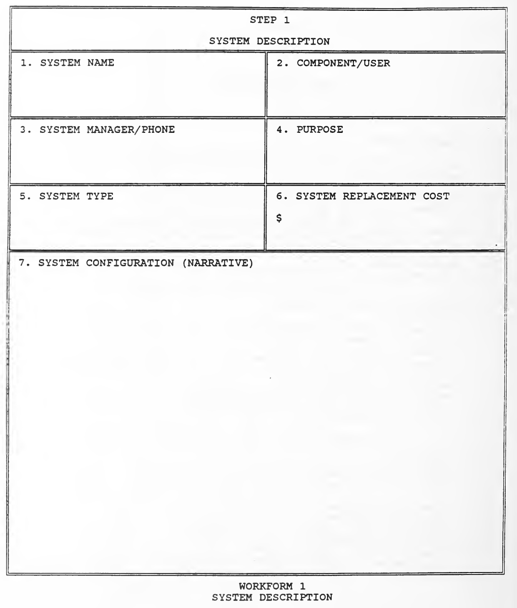
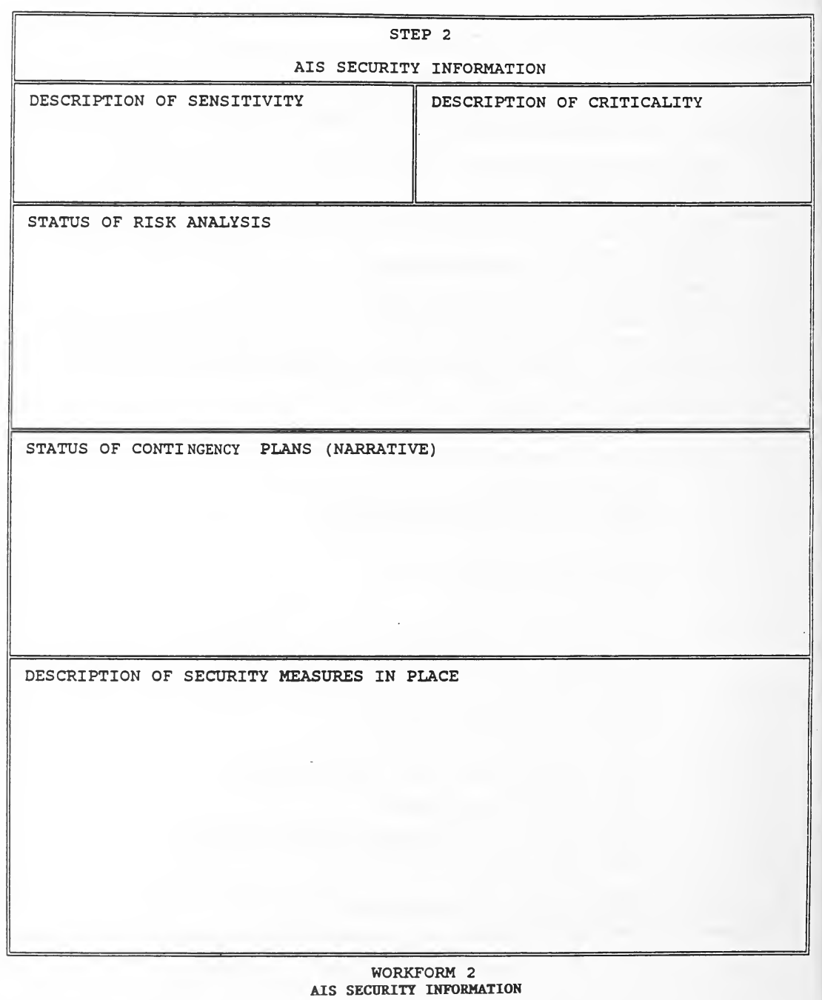
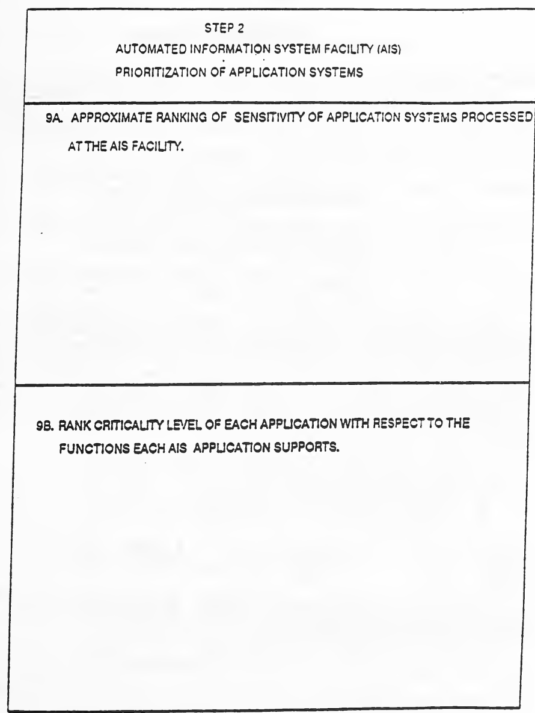
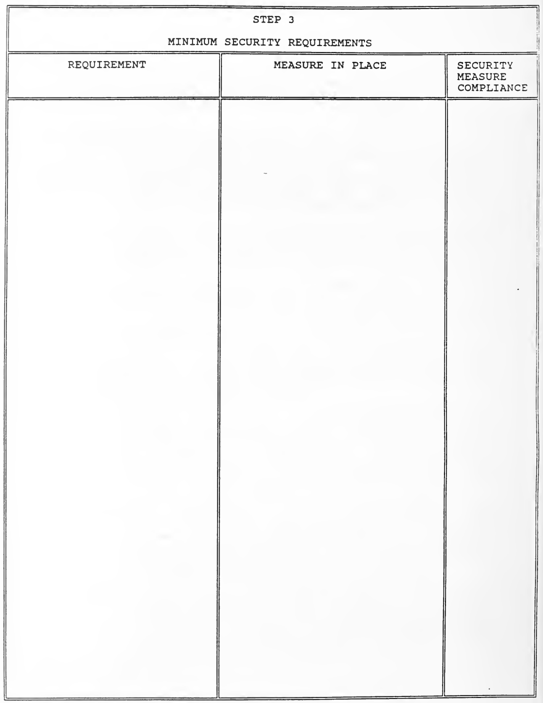
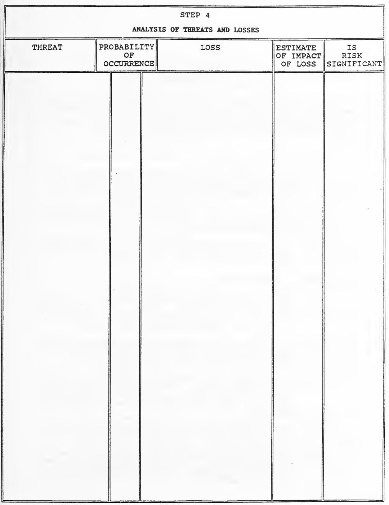
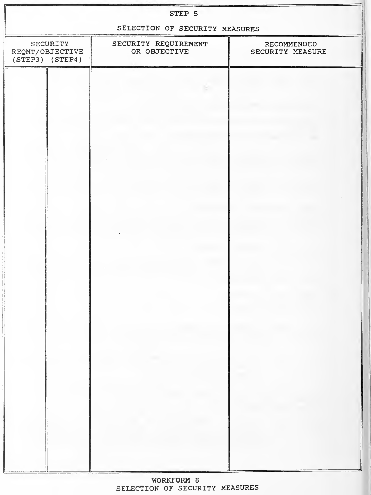
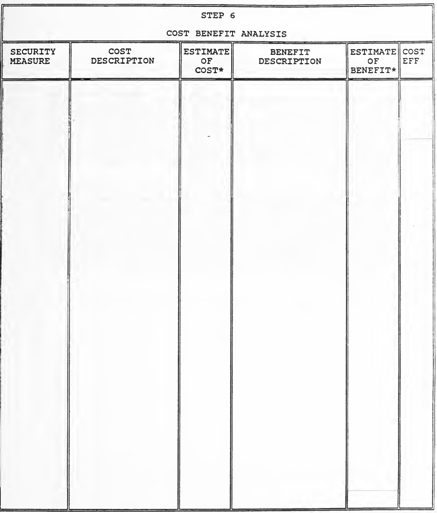

NIST IR 4387 日本語訳
英語タイトル : U.S. Department of Justice Simplified Risk Analysis Guidelines日本語タイトル : 米国司法省 簡易リスク分析ガイドライン
公開日 : 1990-08-01
原文URL : https://csrc.nist.gov/pubs/ir/4387/final
原本 PDF : https://doi.org/10.6028/NIST.IR.4387
訳文 : 有志による非公式の日本語訳（AI による翻訳とレビュー）。全 434 段落を翻訳済み（原文取得日 : 2026-10-31）
[要約] NIST IR 4387 は、米国司法省の Justice Management Division、Security and Emergency Planning Staff、ADP/Telecommunications Group が作成した簡易リスク分析ガイドライン（SRAG）を示す報告書です。SRAG は、リスク分析のプロセスを簡素化することを意図しており、評価対象のシステムが司法省に適用される最小限のセキュリティ要件を満たしているかをまず判断し、評価すべき脅威と損失の数を減らします。システムを、パーソナルコンピューター、メインフレーム・ミニコンピューター・その他の遠隔からアクセスされる AIS、アプリケーションシステムの 3 つのカテゴリに分け、リスク分析を実施して結果を文書化するための 7 つのステップを定めています。ステップは、システムの記述から、最小限のセキュリティ要件、脅威と損失の分析、セキュリティ対策の選定を経て、管理層の意思決定のための勧告まで進み、SRAG の使用手順とフローチャート、リスク分析の実施と文書化に使う表と作業様式が添えられています。
U.S. DEPARTMENT OF JUSTICE SIMPLIFIED RISK ANALYSIS GUIDELINES
米国司法省 簡易リスク分析ガイドライン
NEW NIST PUBLICATION
NIST 新刊
December 1990
1990年12月
Edward Roback NIST Coordinator
Edward Roback NIST コーディネーター
U.S. DEPARTMENT OF COMMERCE National Institute of Standards and Technology Gaithersburg, MD 20899
米国商務省 国立標準技術研究所 Gaithersburg, MD 20899
U.S. DEPARTMENT OF COMMERCE Robert A. Mosbacher, Secretary NATIONAL INSTITUTE OF STANDARDS AND TECHNOLOGY John W. Lyons, Director
米国商務省 Robert A. Mosbacher 長官 国立標準技術研究所 John W. Lyons 所長
U.S. DEPARTMENT OF JUSTICE SIMPLIFIED RISK ANALYSIS GUIDELINES
米国司法省 簡易リスク分析ガイドライン
Edward Roback NIST Coordinator
Edward Roback NIST コーディネーター
U.S. DEPARTMENT OF COMMERCE National Institute of Standards and Technology Gaithersburg, MD 20899
米国商務省 国立標準技術研究所 Gaithersburg, MD 20899
August 1990
1990年8月
U.S. DEPARTMENT OF COMMERCE Robert A. Mosbacher, Secretary NATIONAL INSTITUTE OF STANDARDS AND TECHNOLOGY John W. Lyons, Director
米国商務省 Robert A. Mosbacher 長官 国立標準技術研究所 John W. Lyons 所長
Preface
序文
This National Institute of Standards and Technology Interagency Report (NISTIR) presents the Simplified Risk Analysis Guidelines developed by the U.S. Department of Justice, Justice Management Division, Security and Emergency Planning Staff, ADP/Telecommunications Group.
この国立標準技術研究所省庁間報告書（NISTIR）は、米国司法省の Justice Management Division、Security and Emergency Planning Staff、ADP/Telecommunications Group が作成した簡易リスク分析ガイドライン（Simplified Risk Analysis Guidelines）を提示するものです。
The National Institute of Standards and Technology (NIST) makes no claim or endorsement of this risk analysis methodology. However, as this material may be of use to other organizations, the report is being reprinted by NIST to make it publicly available and to provide for broad dissemination of this federally sponsored work. This publication is part of a continuing effort to assist federal agencies in accordance with NIST's mandate under the Computer Security Act of 1987.
国立標準技術研究所（NIST）は、このリスク分析方法論について、何らかの主張も推奨も行いません。しかし、この資料は他の組織にとって有用な場合があるため、連邦政府が支援したこの成果を公開して広く普及させるために、NIST が本報告書を再刊しています。この刊行物は、1987 年コンピューターセキュリティ法に基づく NIST の責務に従って連邦機関を支援する、継続的な取り組みの一部です。
NIST expresses its appreciation to the U.S. Department of Justice for their permission to publish this report.
NIST は、本報告書の公表を許可してくださった米国司法省に謝意を表します。
Questions regarding this publication should be addressed to the Associate Director for Computer Security, National Computer Systems Laboratory, Building 225, Room B154, National Institute of Standards and Technology, Gaithersburg, MD, 20899.
この刊行物に関する質問は、Associate Director for Computer Security, National Computer Systems Laboratory, Building 225, Room B154, National Institute of Standards and Technology, Gaithersburg, MD, 20899 宛にお寄せください。
Additional copies of this publication may be purchased through the National Technical Information Service, Springfield, VA, 22161, telephone: (703) 487-4650.
この刊行物の追加の部数は、National Technical Information Service, Springfield, VA, 22161（電話: (703) 487-4650）を通じて購入できます。
U.S. Department of Justice Justice Management Division
米国司法省 Justice Management Division
Security Guidelines
セキュリティガイドライン
DEPARTMENT OF JUSTICE SIMPLIFIED RISK ANALYSIS GUIDELINES (SRAG) APRIL 1990
司法省 簡易リスク分析ガイドライン（SRAG） 1990年4月
Prepared by: Security and Emergency Planning Staff
作成: Security and Emergency Planning Staff
DEPARTMENT OF JUSTICE SIMPLIFIED RISK ANALYSIS GUIDELINES (SRAG) APRIL 1990 JUSTICE MANAGEMENT DIVISION SECURITY AND EMERGENCY PLANNING STAFF ADP/TELECOMMUNICATIONS GROUP
司法省 簡易リスク分析ガイドライン（SRAG） 1990年4月 JUSTICE MANAGEMENT DIVISION SECURITY AND EMERGENCY PLANNING STAFF ADP/TELECOMMUNICATIONS GROUP
DEPARTMENT OF JUSTICE SIMPLIFIED RISK ANALYSIS GUIDELINES APRIL 1990
司法省 簡易リスク分析ガイドライン 1990年4月
TABLE OF CONTENTS
目次
•序論
•背景
•定義
•STEPS
•ステップ
•STEP 1. SYSTEM DESCRIPTION — 4
•ステップ 1. システムの記述 — 4
•STEP 2. AIS SECURITY INFORMATION — 5
•ステップ 2. AIS のセキュリティ情報 — 5
•STEP 3. MINIMUM SECURITY REQUIREMENTS — 6
•ステップ 3. 最小限のセキュリティ要件 — 6
•STEP 4. ANALYSIS OF THREATS AND LOSSES — 7
•ステップ 4. 脅威と損失の分析 — 7
•STEP 5. SELECTION OF SECURITY MEASURES — 7
•ステップ 5. セキュリティ対策の選定 — 7
•STEP 6. COST BENEFIT ANALYSIS — 8
•ステップ 6. 費用便益分析 — 8
•STEP 7. RECOMMENDATIONS FOR MANAGEMENT DECISION — 9
•ステップ 7. 管理層の意思決定のための勧告 — 9
•INSTRUCTIONS FOR CONDUCTING A RISK ANALYSIS USING THE SRAG — 11
•SRAG を用いたリスク分析の実施手順 — 11
•APPENDIX — 17
•付録 — 17
•SECTION 3.1, MINIMUM REQUIREMENTS — 25
•第 3.1 節 最小限の要件 — 25
•SECTION 4.0, ANALYSIS OF THREATS AND LOSSES — 35
•第 4.0 節 脅威と損失の分析 — 35
•SECTION 5.1, SELECTION OF SECURITY MEASURES — 40
•第 5.1 節 セキュリティ対策の選定 — 40
•SECTION 6.1, COST BENEFIT ANALYSIS — 49
•第 6.1 節 費用便益分析 — 49
•SECTION 7.1, RECOMMENDATIONS FOR MANAGEMENT DECISION — 52
•第 7.1 節 管理層の意思決定のための勧告 — 52
•FIGURES
•図
•TABLES
•表
•WORK FORMS
•作業様式
•WORK FORM 1, STEP 1, SYSTEM DESCRIPTION — 18
•作業様式 1 ステップ 1 システムの記述 — 18
•WORK FORM 2, STEP 2, AIS SECURITY INFORMATION — 20
•作業様式 2 ステップ 2 AIS のセキュリティ情報 — 20
•WORK FORM 3, STEP 2, APPLICATION SYSTEM DATA SENSITIVITY — 22
•作業様式 3 ステップ 2 アプリケーションシステムのデータの機微性 — 22
•WORK FORM 4, STEP 2, PRIORITIZATION OF SENSITIVITY AND CRITICALITY OF APPLICATIONS — 23
•作業様式 4 ステップ 2 アプリケーションの機微性と重要度の優先順位付け — 23
•WORK FORM 5, STEP 2, CRITICALITY OF APPLICATION SYSTEM — 24
•作業様式 5 ステップ 2 アプリケーションシステムの重要度 — 24
•WORK FORM 6, STEP 3, MINIMUM SECURITY REQUIREMENTS — 34
•作業様式 6 ステップ 3 最小限のセキュリティ要件 — 34
•WORK FORM 7, STEP 4, ANALYSIS OF THREATS AND LOSSES — 39
•作業様式 7 ステップ 4 脅威と損失の分析 — 39
•WORK FORM 8, STEP 5, SELECTION OF SECURITY MEASURES — 48
•作業様式 8 ステップ 5 セキュリティ対策の選定 — 48
•WORK FORM 9, STEP 6, COST BENEFIT ANALYSIS — 51
•作業様式 9 ステップ 6 費用便益分析 — 51
•WORK FORM 10, STEP 7, RECOMMENDATIONS FOR MANAGEMENT DECISION/ACTION — 53
•作業様式 10 ステップ 7 管理層の意思決定・措置のための勧告 — 53
DEPARTMENT OF JUSTICE SIMPLIFIED RISK ANALYSIS GUIDELINES
司法省 簡易リスク分析ガイドライン
1. INTRODUCTION.
1. 序論
•a. A risk analysis may be defined as an analysis of the threats to and vulnerabilities of a system, expected losses, and selection of countermeasures to reduce the losses to an acceptable level. The requirement for Federal agencies to conduct a risk analysis of an Automated Data Processing (ADP) facility has been in effect since the issuance of the Office of Management and Budget (OMB) Circular A-71, Transmittal Memorandum No. 1 in 1978. The Department of Justice (DOJ) issued Order DOJ 2640.2B and its earlier canceled versions which established the requirement for a risk analysis of DOJ ADP facilities beginning in 1977. The DOJ also issued a detailed risk analysis guidance document for use by DOJ ADP facilities in 1977. A number of Federal agencies, contractors, and university professors have developed risk analysis methodologies, some of which have been automated. Due to the complexity of the risk analysis process, the methodologies generally require considerable time to become knowledgeable of its correct usage and to complete the risk analysis.
•a. リスク分析は、システムに対する脅威と脆弱性、予想される損失、および損失を許容可能な水準まで減らすための対策の選定を分析するものと定義できます。連邦機関に自動データ処理（ADP）施設のリスク分析の実施を求める要件は、1978 年に行政管理予算局（OMB）Circular A-71, Transmittal Memorandum No. 1 が発行されて以来、有効となっています。司法省（DOJ）は、1977 年からDOJ の ADP 施設にリスク分析を求める Order DOJ 2640.2B と、それ以前の廃止済みの版を発行しました。DOJ は、1977 年に、DOJ の ADP 施設が使用するための詳細なリスク分析ガイダンス文書も発行しました。多くの連邦機関、契約業者および大学教授がリスク分析方法論を開発しており、その一部は自動化されています。リスク分析プロセスは複雑であるため、これらの方法論では一般に、正しい使用方法を習得し、リスク分析を完了するまでにかなりの時間を要します。
•b. A risk analysis does not enhance security by itself but provides cost effective security recommendations for management consideration. Therefore, there is a need to simplify the risk analysis process to the extent possible, which is the intent of the Simplified Risk Analysis Guidelines (SRAG) contained herein. The SRAG expedites the risk analysis process for the system under evaluation by initially determining if minimum security requirements applicable to the DOJ are met, which eliminates a number of threats and losses from evaluation. Although the SRAG simplifies the risk analysis process, SRAG users should be aware that significant effort by knowledgeable personnel may be required to complete a risk analysis. The SRAG is based on Automated Information System (AIS) security policies, regulations, circulars, and guidelines applicable to the DOJ as well as a review of a number of risk analysis methodologies developed by Government agencies and contractors.
•b. リスク分析は、それ自体ではセキュリティを高めませんが、管理層が検討するための費用対効果の高いセキュリティ勧告を提供します。したがって、リスク分析のプロセスを可能な限り簡素化する必要があります。これが、ここに収録する簡易リスク分析ガイドライン（SRAG）の意図です。SRAG は、まず DOJ に適用される最小限のセキュリティ要件が満たされているかどうかを判断し、評価対象から多くの脅威と損失を除外することで、評価対象システムのリスク分析プロセスを迅速化します。SRAG はリスク分析プロセスを簡素化しますが、SRAG の利用者は、リスク分析を完了するために、十分な知識と経験を備えた要員による相当な労力が必要になる場合があることに留意すべきです。SRAG は、DOJ に適用される自動情報システム（AIS）のセキュリティ方針、規則、通達およびガイドラインと、政府機関や契約業者が開発した多数のリスク分析方法論のレビューに基づいています。
•c. After evaluating compliance with the minimum security requirements, additional threats and vulnerabilities not affected by the minimum security requirements are assessed to determine if further analysis is needed. The SRAG or a risk analysis methodology selected by the user can be used for this portion of the risk analysis process. Due to the increasing use of AISs other than mainframes, the SRAG also includes sections on microcomputers/Personal Computers (PCs) and application systems. The sections applicable to mainframes are also applicable to minicomputers and other remotely accessed AISs, including networks of PCs.
•c. 最小限のセキュリティ要件への準拠を評価した後、最小限のセキュリティ要件の影響を受けない追加の脅威と脆弱性を評価して、さらなる分析が必要かどうかを判断します。リスク分析の工程のこの部分には、SRAG、または利用者が選択したリスク分析方法論を使用できます。メインフレーム以外の AIS の利用が増えていることから、SRAG には、マイクロコンピューター/パーソナルコンピューター（PC）とアプリケーションシステムに関する節も含まれています。メインフレームに適用される節は、ミニコンピューターや、PC のネットワークを含む、その他の遠隔からアクセスされる AIS にも適用されます。
2. BACKGROUND.
2. 背景
•a. Various risk analysis methodologies have been developed by contractors and agencies since the issuance of the risk analysis guidelines by the National Bureau of Standards (NBS) of Federal Information Processing Standard (FIPS) Publication (PUB) 31, "Guidelines for ADP Physical Security and Risk Management" in 1974, and FIPS PUB 65, "Guideline for ADP Risk Assessment" in 1979. The NBS publications advocated the use of quantitative techniques assigning dollar values to system losses and estimating the annual probability of threats occurring to cause these losses. Similarly, dollar figures are assigned to the cost of security countermeasures and to the reduction in expected annual losses to determine the cost effectiveness of the security measure.
•a. 1974 年に米国標準局（NBS）が連邦情報処理標準（FIPS）Publication（PUB）31「Guidelines for ADP Physical Security and Risk Management」を、1979 年に FIPS PUB 65「Guideline for ADP Risk Assessment」を発行してリスク分析のガイドラインを示して以来、契約業者や機関によってさまざまなリスク分析方法論が開発されてきました。NBS の刊行物は、システムの損失に金額を割り当て、それらの損失を引き起こす脅威が発生する年間の確率を見積もる、定量的な技法の使用を提唱していました。同様に、セキュリティ対策の費用と、予想される年間損失の減少分にも金額を割り当て、セキュリティ対策の費用対効果を判断します。
•b. Although the National Institute of Standards and Technology (name of NBS since 1988) has not issued any risk analysis publications recently, they are presently considering methodologies using qualitative analysis in part or as a primary method of risk analysis. The methodologies that have been developed are primarily for the mainframe environment despite the increase in usage of PCs and networks and include the use of both quantitative and qualitative techniques. As stated previously, the SRAG does not require or preclude the use of any specific methodology and may be used to conduct a risk analysis of an AIS in many cases without additional risk analysis guidance.
•b. 国立標準技術研究所（1988 年以降の NBS の名称）は、最近はリスク分析に関する刊行物を発行していませんが、現在、一部または主要なリスク分析の手法として、定性的分析を用いる方法論を検討しています。これまでに開発された方法論は、PC やネットワークの利用が増えているにもかかわらず、主にメインフレーム環境を対象としており、定量的な技法と定性的な技法の両方の使用を含んでいます。前述のとおり、SRAG は特定の方法論の使用を要求することも、妨げることもなく、多くの場合、追加のリスク分析ガイダンスなしで AIS のリスク分析を実施するために使用できます。
3. DEFINITIONS.
3. 定義
•a. Accreditation - Accreditation is the official management authorization to operate an AIS or network in a particular security mode with a proscribed set of administrative, environmental, and technical security safeguards in a given operational environment.
•a. 認定（Accreditation） - 認定とは、所定の運用環境において、管理上、環境上および技術上のセキュリティ保護措置の規定された組み合わせを備えて、特定のセキュリティモードで AIS またはネットワークを運用することに対する、管理層の公式の承認です。
•b. Automated Information System (AIS) - An AIS is an assembly of computer hardware, software, and/or firmware configured to collect, create, communicate, compute, disseminate, process, store, or control data or information. An AIS will typically consist of ADP system hardware, operating system and application software, associated peripheral devices, and associated data communications equipment. An AIS includes PCs, work stations, and office automation systems.
•b. 自動情報システム（AIS） - AIS とは、データまたは情報を収集、作成、通信、計算、配布、処理、保管または制御するように構成された、コンピューターのハードウェア、ソフトウェア、またはファームウェア（あるいはそのすべて）の集合体です。AIS は通常、ADP システムのハードウェア、オペレーティングシステムとアプリケーションソフトウェア、関連する周辺装置、および関連するデータ通信装置で構成されます。AIS には、PC、ワークステーションおよびオフィスオートメーションシステムが含まれます。
•c. Network - A network comprises communications media and all attached components whose responsibility is the transfer of information among a collection of AISs or work stations. Network components include packet switches, front-end computers, network controllers, and technical control devices.
•c. ネットワーク - ネットワークは、通信媒体と、AIS またはワークステーションの集合の間で情報を転送する責任を負う、接続されたすべての構成要素で構成されます。ネットワークの構成要素には、パケット交換機、フロントエンドコンピューター、ネットワークコントローラーおよび技術制御装置が含まれます。
•d. Sensitive Application Systems - Systems that process sensitive data or require protection due to the risk and magnitude of loss or harm that could result from improper operation or deliberate manipulation of the application.
•d. 機微なアプリケーションシステム - 機微なデータを処理するシステム、またはアプリケーションの不適切な運用や意図的な操作によって生じうる損失や損害のリスクと大きさのために保護が必要なシステム。
4. DESCRIPTION OF SRAG APPROACH.
4. SRAG の手法の説明
•a. The SRAG approach divides systems requiring risk analyses into three categories: PCs; mainframes, minicomputers, and other remotely accessed AISs; and application systems. Each of these categories is further divided depending on whether nonsensitive, sensitive, or classified information is processed, or whether an application is nonsensitive or sensitive as defined in OMB Circular A-130, Appendix III.
•a. SRAG の手法は、リスク分析が必要なシステムを 3 つのカテゴリに分けます。PC、メインフレーム・ミニコンピューター・その他の遠隔からアクセスされる AIS、およびアプリケーションシステムです。これらの各カテゴリは、機微でない情報、機微な情報または機密扱いの情報のどれを処理するか、あるいは、OMB Circular A-130, Appendix III で定義されているように、アプリケーションが機微でないか機微であるかに応じて、さらに分けられます。
•b. The SRAG includes seven steps that are required to conduct the risk analysis and to document the results. The first two steps are used to provide a description of the AIS, its security concerns, and the security measures in place. In Step 3, the AIS environment is evaluated to determine if minimum security requirements are met. The minimum security requirements are listed for processing nonsensitive, sensitive, and classified information on PCs. It should be noted that the minimum security requirements for processing sensitive information also include the requirements for processing nonsensitive; processing classified information requires meeting the minimum security requirements for classified, sensitive, and nonsensitive information. The minimum security requirements for mainframes, minicomputers, and other remotely accessed AISs are presented in a similar hierarchical structure. Sensitive applications must meet the minimum requirements listed for sensitive and nonsensitive applications.
•b. SRAG には、リスク分析を実施し、その結果を文書化するために必要な 7 つのステップが含まれています。最初の 2 つのステップは、AIS の記述、そのセキュリティ上の懸念事項、および実施済みのセキュリティ対策を示すために使用します。ステップ 3 では、AIS の環境を評価して、最小限のセキュリティ要件が満たされているかどうかを判断します。最小限のセキュリティ要件は、PC で機微でない情報、機微な情報および機密扱いの情報を処理する場合について列挙されています。機微な情報を処理するための最小限のセキュリティ要件には、機微でない情報を処理するための要件も含まれること、機密扱いの情報の処理には、機密扱い、機微および機微でない情報の最小限のセキュリティ要件を満たすことが必要であることに留意すべきです。メインフレーム、ミニコンピューター、およびその他の遠隔からアクセスされる AIS の最小限のセキュリティ要件も、同様の階層構造で示されています。機微なアプリケーションは、機微および機微でないアプリケーションについて列挙された最小限の要件を満たさなければなりません。
•c. The remaining steps are used for the following: To determine from an analysis of threats and losses whether additional security measures need to be considered; to select security measures to comply with the minimum requirements that are not effectively met and to reduce other losses; to provide for cost effective recommendations of security measures; to present the recommendations for a decision by management whether to implement the recommendations or accept the risk; and to document the results. The seven SRAG steps are discussed briefly below, followed by Section 12, which provides instructions for using the SRAG and includes flow charts and other information to assist SRAG users. The last portion of the SRAG is the Appendix, which includes detailed information required to conduct a risk analysis, and a number of tables and work forms for use in conducting and documenting the risk analysis.
•c. 残りのステップは、次の目的で使用します。脅威と損失の分析から、追加のセキュリティ対策を検討する必要があるかどうかを判断すること、効果的に満たされていない最小限の要件に準拠し、その他の損失を減らすためのセキュリティ対策を選定すること、費用対効果の高いセキュリティ対策の勧告を提示すること、勧告を実施するかリスクを受容するかについて管理層が決定できるよう勧告を提示すること、ならびに結果を文書化することです。SRAG の 7 つのステップを以下に簡潔に説明し、続いて、SRAG の使用手順を示し、フローチャートと、SRAG の利用者を支援するその他の情報を含む第 12 節を置いています。SRAG の最後の部分は付録で、リスク分析の実施に必要な詳細情報と、リスク分析の実施および文書化に使用する多数の表と作業様式が含まれています。
5. STEP 1. SYSTEM DESCRIPTION.
5. ステップ 1. システムの記述
•a. The purpose of Step 1 is to provide a system description of the AIS including the system hardware, software, and personnel, and a general description of the applications and data processed by the AIS. If a risk analysis of an application system is being conducted, a description of the purpose and use of the system is required. Estimates of the cost of the system components should also be included.
•a. ステップ 1 の目的は、システムのハードウェア、ソフトウェアおよび要員を含む AIS のシステム記述と、AIS が処理するアプリケーションとデータの一般的な記述を提供することです。アプリケーションシステムのリスク分析を実施する場合は、システムの目的と用途の記述が必要です。システム構成要素の費用の見積りも含めるべきです。
•b. The detailed information required is listed in Table 1 of the Appendix and includes administrative information such as the name and location of the AIS and the names and phone numbers of AIS security personnel. The purpose of the AIS and the component functions it supports should be noted.
•b. 必要な詳細情報は付録の表 1 に列挙されており、AIS の名称と所在地、AIS のセキュリティ担当要員の氏名と電話番号などの管理情報を含みます。AIS の目的と、それが支援する構成要素の機能にも留意すべきです。
•c. The system configuration includes a detailed description of the physical location, system configuration diagram, connections, number of users, system and application personnel, and the application systems. A brief description of the purpose of the applications, their method of data input, and the users of the system data should also be included. Cost information required includes the cost of replacing system hardware and software, and the cost of replacing data. The cost information is useful in determining if security countermeasures to reduce the vulnerabilities and potential losses are cost effective. The information obtained during this step is important in evaluating the potential vulnerabilities of the system and the need for additional security measures. It is only through a review of all system components, the applications processed, and the flow of information that an effective analysis of the potential system vulnerabilities can be obtained.
•c. システム構成には、物理的な所在地、システム構成図、接続、利用者数、システムおよびアプリケーションの要員、ならびにアプリケーションシステムの詳細な記述が含まれます。アプリケーションの目的、データ入力の方法、システムデータの利用者の簡潔な記述も含めるべきです。必要な費用情報には、システムのハードウェアとソフトウェアの交換費用、およびデータの交換費用が含まれます。費用情報は、脆弱性と潜在的な損失を減らすセキュリティ対策が費用対効果の高いものかどうかを判断するのに役立ちます。このステップで得られる情報は、システムの潜在的な脆弱性と追加のセキュリティ対策の必要性を評価するうえで重要です。システムの潜在的な脆弱性を効果的に分析できるのは、すべてのシステム構成要素、処理されるアプリケーション、および情報の流れをレビューすることによってのみです。
6. STEP 2. AIS SECURITY INFORMATION.
6. ステップ 2. AIS のセキュリティ情報
•a. In Step 2 of the risk analysis, security related information for the AIS or application is obtained and documented. The system security measures in effect are identified and documented with a brief evaluation of their effectiveness. Security measures are required even if nonsensitive information is processed to protect the equipment and integrity of the data. However, central to the determination of the need for additional security measures is the type of information processed, whether classified (National Security Information), sensitive (Limited Official Use) or nonsensitive information, and the threats to this information. This information is important in determining which minimum security requirements are applicable. The Appendix contains a list of the factors that should be carefully considered during this step, including a list of security measures (Table 2) and application system data sensitivity and criticality considerations (Table 3 and Work Form 5).
•a. リスク分析のステップ 2 では、AIS またはアプリケーションに関するセキュリティ関連の情報を入手し、文書化します。実施中のシステムのセキュリティ対策を特定し、その有効性の簡潔な評価とともに文書化します。機微でない情報を処理する場合でも、機器とデータの完全性を保護するために、セキュリティ対策が必要です。しかし、追加のセキュリティ対策の必要性を判断する中心となるのは、処理される情報の種類（機密扱い（国家安全保障情報）、機微（限定公用）、または機微でない情報のいずれか）と、その情報に対する脅威です。この情報は、どの最小限のセキュリティ要件が適用されるかを判断するうえで重要です。付録には、このステップで慎重に検討すべき要因の一覧が収められており、セキュリティ対策の一覧（表 2）と、アプリケーションシステムのデータの機微性と重要度の考慮事項（表 3 および作業様式 5）を含みます。
•b. This step also requires an accurate documentation of the security policies, procedures, and countermeasures currently in effect for the AIS. The security measures in place should include administrative procedures, software and hardware security controls, physical security access controls, personnel security controls, and a security awareness program as listed in Table 2. The current security control environment is important due to its impact on the evaluation of the need for additional security measures.
•b. このステップでは、AIS に現在実施されているセキュリティ方針、手順および対策の正確な文書化も必要です。実施中のセキュリティ対策には、表 2 に列挙されているとおり、管理手順、ソフトウェアとハードウェアのセキュリティ管理策、物理的なセキュリティのアクセス管理策、要員のセキュリティ管理策、およびセキュリティ意識向上プログラムを含めるべきです。現在のセキュリティ管理策の環境は、追加のセキュリティ対策の必要性の評価に影響を与えるため、重要です。
•c. The person conducting the risk analysis should also obtain information on the impact of data disclosure, modification, destruction, and disruption of processing on the component's ability to meet mission objectives. The information obtained during Step 2 should be documented using Work Forms 2, 3, 4, and 5. Additional information required by this step includes the number and geographical disparity of AIS users, the frequency of use of the system, and the method of accessing the system.
•c. リスク分析を実施する者は、データの開示、改変、破壊、および処理の中断が、構成要素の任務目標を達成する能力に与える影響に関する情報も入手すべきです。ステップ 2 で得られた情報は、作業様式 2、3、4 および 5 を使用して文書化すべきです。このステップで必要な追加情報には、AIS 利用者の数と地理的な分散、システムの利用頻度、およびシステムへのアクセス方法が含まれます。
7. STEP 3. MINIMUM SECURITY REQUIREMENTS.
7. ステップ 3. 最小限のセキュリティ要件
•a. The minimum security requirements for PCs, mainframes, minicomputers, and other remotely accessed AISs, and application systems are listed in Sections 3.1, 3.2, and 3.3 of the Appendix. The requirements of each of these sections are divided into requirements for nonsensitive, sensitive, and classified processing for Sections 3.1 and 3.2, and nonsensitive and sensitive applications for Section 3.3. The minimum security requirements are hierarchical in structure, so that requirements for processing lower sensitivity levels also are applicable to all higher sensitivity levels.
•a. PC、メインフレーム、ミニコンピューター、その他の遠隔からアクセスされる AIS、およびアプリケーションシステムの最小限のセキュリティ要件は、付録の第 3.1 節、第 3.2 節および第 3.3 節に列挙されています。これらの各節の要件は、第 3.1 節と第 3.2 節では機微でない処理、機微な処理および機密扱いの処理に、第 3.3 節では機微でないアプリケーションと機微なアプリケーションに分けられています。最小限のセキュリティ要件は階層構造になっており、より低い機微性レベルの処理の要件は、より高いすべての機微性レベルにも適用されます。
•b. This step requires a review of the minimum security requirements as listed in the Appendix for the AIS or application under evaluation. The review also requires an evaluation of the effectiveness of the in-place security measures in meeting the security requirement. The person conducting the risk analysis must identify all security measures implemented to comply with the minimum security requirements, assess their effectiveness in meeting the requirement, and document the results. Any of the minimum requirements that are not met will be addressed in Step 5 where the selection of additional countermeasures will be considered.
•b. このステップでは、評価対象の AIS またはアプリケーションについて、付録に列挙された最小限のセキュリティ要件をレビューする必要があります。このレビューでは、実施中のセキュリティ対策がセキュリティ要件を満たすうえでどの程度有効かの評価も必要です。リスク分析を実施する者は、最小限のセキュリティ要件に準拠するために実施されているすべてのセキュリティ対策を特定し、要件を満たすうえでの有効性を評価し、結果を文書化しなければなりません。満たされていない最小限の要件は、追加の対策の選定を検討するステップ 5 で扱います。
8. STEP 4. ANALYSIS OF THREATS AND LOSSES.
8. ステップ 4. 脅威と損失の分析
•a. The purpose of Step 4 is to evaluate threats and losses to determine if consideration of additional security measures to reduce the losses is required. Additional threats and vulnerabilities and resultant losses that were not fully addressed by the minimum security requirements are considered during this step. Typical threats and losses for each sensitivity level are presented in Section 4 of the Appendix; additional threats and losses not listed in Section 4 but applicable to the system should also be considered.
•a. ステップ 4 の目的は、脅威と損失を評価して、損失を減らす追加のセキュリティ対策を検討する必要があるかどうかを判断することです。最小限のセキュリティ要件では十分に扱われなかった追加の脅威、脆弱性およびその結果としての損失は、このステップで検討します。各機微性レベルの典型的な脅威と損失は付録の第 4 節に示されています。第 4 節に列挙されていませんが、システムに該当する追加の脅威と損失も検討すべきです。
•b. The likelihood of a threat and the potential loss that could be caused by the threat are considered and estimated on a qualitative basis (very low, low, moderate, high, very high). If the threat probability is estimated as less than moderate (low, very low) and the loss is not estimated as very high, the risk is not considered significant and security measures are not considered for the threat-loss pair. If the risk is deemed significant, security measures to comply with the requirement are selected during Step 5. The applicable threats and losses, the estimate of their probability or impact, and the determination if the risk is significant are documented to complete this step.
•b. 脅威の可能性と、その脅威によって生じうる潜在的な損失は、定性的に（非常に低い、低い、中程度、高い、非常に高い）検討し、見積もります。脅威の確率が中程度未満（低い、非常に低い）と見積もられ、かつ損失が非常に高いとは見積もられない場合、そのリスクは重大とはみなされず、その脅威と損失の組み合わせについてセキュリティ対策は検討されません。リスクが重大とみなされた場合、要件に準拠するためのセキュリティ対策は、ステップ 5 で選定されます。該当する脅威と損失、それらの確率または影響の見積り、およびリスクが重大かどうかの判断を文書化して、このステップを完了します。
9. STEP 5. SELECTION OF SECURITY MEASURES.
9. ステップ 5. セキュリティ対策の選定
•a. Security measures are selected during Step 5 based upon the results of tasks previously completed in Steps 3 and 4. The selection includes security measures to comply with the minimum security requirements that are not met (Step 3) and to reduce the threats/losses where the risk is significant (Step 4).
•a. セキュリティ対策は、ステップ 3 と 4 で完了した作業の結果に基づいて、ステップ 5 で選定します。この選定には、満たされていない最小限のセキュリティ要件に準拠するためのセキュリティ対策（ステップ 3）と、リスクが重大な脅威・損失を減らすためのセキュリティ対策（ステップ 4）が含まれます。
•b. Suggested security measures are listed in the Appendix but SRAG users may consider other security measures applicable to their operational environment. The security measures selected and the relevant requirements of Steps 3 and 4 should be documented. The security measures selected to comply with the minimum security requirements of Step 3 are used as recommendations in Step 7; the security measures selected to reduce expected losses of significant threats/losses of Step 4 will go through the cost benefit analysis process of Step 6.
•b. 推奨されるセキュリティ対策は付録に列挙されていますが、SRAG の利用者は、自らの運用環境に適用できる他のセキュリティ対策を検討してもよいです。選定したセキュリティ対策と、ステップ 3 および 4 の関連する要件は、文書化すべきです。ステップ 3 の最小限のセキュリティ要件に準拠するために選定されたセキュリティ対策は、ステップ 7 で勧告として使用されます。ステップ 4 の重大な脅威・損失について予想される損失を減らすために選定されたセキュリティ対策は、ステップ 6 の費用便益分析の工程を経ます。
10. STEP 6. COST BENEFIT ANALYSIS.
10. ステップ 6. 費用便益分析
•a. A cost benefit analysis of the security measures selected to respond to the threat/loss analysis of Step 4 is conducted during this step to consider their cost effectiveness and to provide the rationale and justification for recommending security measures to management for action. The security measures that are not considered cost effective based on the cost benefit analysis are dropped from further consideration. A cost benefit analysis is not conducted for security measures selected to meet minimum security requirements but cost information on these measures should be provided for the management decision process of Step 7. Work Form 9 can be used to provide security measure cost information or information on benefits of the required security measure.
•a. ステップ 4 の脅威・損失の分析に対応するために選定されたセキュリティ対策の費用便益分析は、このステップで実施され、費用対効果を検討し、管理層が措置を講じるためにセキュリティ対策を勧告する根拠と正当性を示します。費用便益分析に基づいて費用対効果が高くないとみなされたセキュリティ対策は、以後の検討から外されます。最小限のセキュリティ要件を満たすために選定されたセキュリティ対策については費用便益分析を実施しませんが、これらの対策の費用情報は、ステップ 7 の管理層の意思決定の工程に提供すべきです。作業様式 9 は、セキュリティ対策の費用情報、または必要なセキュリティ対策の便益に関する情報を提供するために使用できます。
•b. The costs can be expressed in terms of dollars based on the cost of security hardware or software, personnel resources, or impact on the AIS operation. The expression of costs and benefits in annualized dollar terms where practical is recommended to provide management with a sound basis for a decision on implementation of security safeguards. Alternatively, the costs can be expressed in qualitative terms.
•b. 費用は、セキュリティのハードウェアまたはソフトウェアの費用、要員の資源、または AIS の運用への影響に基づいて、金額で表すことができます。セキュリティ保護措置の実施に関する決定に確かな根拠を管理層に提供するために、実際的な場合には、費用と便益を年換算の金額で表すことが推奨されます。あるいは、費用を定性的な言葉で表すこともできます。
•c. The benefits consist of reduction in the threat occurrence and/or loss impact and include any beneficial impact on mission operations due to increased protection of DOJ information against unauthorized disclosure, modification, and destruction, or disruption of information processing. The benefits should be identified and estimated in quantitative or qualitative terms. Similar to the cost estimates, expression of the benefits in quantitative terms of reduced annualized losses is recommended where practical. The alternative is to estimate the benefits in qualitative terms.
•c. 便益は、脅威の発生の減少、または損失の影響の減少（あるいはその両方）で構成され、DOJ の情報を、無許可の開示、改変、破壊、または情報処理の中断から保護する度合いが高まることによる、任務運営への有益な影響を含みます。便益は、定量的または定性的な言葉で特定し、見積もるべきです。費用の見積りと同様に、実際的な場合には、年換算の損失の減少という定量的な言葉で便益を表すことが推奨されます。代替の方法は、便益を定性的な言葉で見積もることです。
•d. The person conducting the risk analysis must decide which of the security measures are justified based on the cost benefit analysis and forward these as recommendations for management consideration in Step 7. The results of the cost benefit analysis including the identification and estimate of costs and benefits for each security measure and the evaluation of its cost effectiveness should be documented using Work Form 9 of the Appendix.
•d. リスク分析を実施する者は、費用便益分析に基づいてどのセキュリティ対策が正当化されるかを決定し、それらをステップ 7 で管理層が検討するための勧告として提出しなければなりません。各セキュリティ対策の費用と便益の特定と見積り、および費用対効果の評価を含む費用便益分析の結果は、付録の作業様式 9 を使用して文書化すべきです。
11. STEP 7. RECOMMENDATIONS FOR MANAGEMENT DECISION.
11. ステップ 7. 管理層の意思決定のための勧告
•a. The final step is to present the cost effective security recommendations to higher level management for a decision on whether to implement individual recommendations. A proposed schedule for implementing security measures should be provided where appropriate. Management must decide whether to provide the funding or personnel resources, or accept the operational impact that may be required for some security recommendations.
•a. 最後のステップは、個々の勧告を実施するかどうかを決定してもらうために、費用対効果の高いセキュリティの勧告を上位の管理層に提示することです。適切な場合には、セキュリティ対策を実施するための提案スケジュールを提供すべきです。管理層は、資金や要員の資源を提供するか、一部のセキュリティの勧告に必要となりうる運用上の影響を受け入れるかを決定しなければなりません。
•b. The alternative is for management to accept the risk to the security of DOJ information. For recommendations with significant budgetary impact, the management official may decide to delay implementing the recommendation until funding is available and should note this in the comments section of Work Form 10. The recommendations and supporting cost/benefit information should be clearly presented to the responsible management official and the decision documented using Work Form 10.
•b. もう 1 つの選択肢は、管理層が DOJ の情報のセキュリティに対するリスクを受容することです。予算への影響が大きい勧告については、管理責任者は、資金が利用できるようになるまで勧告の実施を延期すると決定してもよく、その場合は、作業様式 10 のコメント欄にその旨を記載すべきです。勧告とそれを裏付ける費用・便益の情報は、責任ある管理責任者に明確に提示し、決定は作業様式 10 を使用して文書化すべきです。
12. INSTRUCTIONS FOR CONDUCTING A RISK ANALYSIS USING THE SRAG.
12. SRAG を用いたリスク分析の実施手順
•a. The previous sections have provided a general description of the SRAG approach and the steps involved in conducting a risk analysis. This section provides instructions on how to use the detailed information in the tables, work forms, and sections of the Appendix. This portion of the SRAG also contains a flow chart of the SRAG process and includes charts showing the applicable tables, work forms, and sections depending on the sensitivity of the data processed and the type of system undergoing the risk analysis.
•a. これまでの節では、SRAG の手法と、リスク分析の実施に関わるステップの一般的な説明を示しました。この節では、付録の表、作業様式および節にある詳細な情報の使い方の手順を示します。SRAG のこの部分には、SRAG の工程のフローチャートも含まれており、処理されるデータの機微性とリスク分析を受けるシステムの種類に応じて、該当する表、作業様式および節を示す図も含まれています。
•b. The SRAG includes sections that apply specifically to three categories of systems:
•b. SRAG には、3 つのカテゴリのシステムに特に適用される節が含まれています。
•(1) PCs, except as noted below in (2).
•(1) 下記の (2) に記載する場合を除く PC。
•(2) Mainframes, minicomputers, and other remotely accessed AISs, such as PCs used as file servers in a network configuration.
•(2) メインフレーム、ミニコンピューター、およびネットワーク構成でファイルサーバーとして使用される PC などの、その他の遠隔からアクセスされる AIS。
•(3) Application systems.
•(3) アプリケーションシステム。
•c. Within the first two categories, there are sections that are applicable only if nonsensitive, sensitive, or classified data are processed. For application systems, some sections are applicable either to nonsensitive or sensitive applications.
•c. 最初の 2 つのカテゴリには、機微でないデータ、機微なデータ、または機密扱いのデータを処理する場合にのみ適用される節があります。アプリケーションシステムについては、機微でないアプリケーションまたは機微なアプリケーションのいずれかに適用される節があります。
•d. In conducting a risk analysis of a system, the person conducting the risk analysis must initially determine which category and sensitivity level is applicable. Classified information includes all National Security Information (Top Secret, Secret, or Confidential) classified under Executive Order No. 12356. Sensitive (Limited Official Use) information is defined in Order DOJ 2620.7, "Control and Protection of Limited Official Use Information," as unclassified information that must be protected against release to unauthorized individuals. The term "sensitive application systems" is defined in the Definitions section of the SRAG.
•d. システムのリスク分析を実施する際、リスク分析を実施する者は、まず、どのカテゴリと機微性レベルが該当するかを判断しなければなりません。機密扱いの情報には、Executive Order No. 12356 に基づいて機密指定されたすべての国家安全保障情報（トップシークレット、シークレット、コンフィデンシャル）が含まれます。機微（Limited Official Use）な情報は、Order DOJ 2620.7「Control and Protection of Limited Official Use Information」において、無許可の個人への公開から保護しなければならない、機密扱いでない情報と定義されています。「機微なアプリケーションシステム」という用語は、SRAG の定義の節で定義されています。
•e. A separate risk analysis does not have to be conducted for each individual PC. A single risk analysis can be conducted for PCs with a similar configuration and sensitivity level and located in a common physical and security environment. Also, any minor differences in individual PCs included in the risk analysis can be noted in the applicable sections and/or recommendations.
•e. 個々の PC ごとに別個のリスク分析を実施する必要はありません。構成と機微性レベルが類似し、共通の物理的・セキュリティ環境にある PC については、1 つのリスク分析を実施できます。また、リスク分析に含まれる個々の PC の細かな相違は、該当する節または勧告（あるいはその両方）に記載できます。
•f. A flow chart of the SRAG process is contained in Figure 1 (Page 12). The risk analysis proceeds through consecutive steps from Step 1 through Step 7. The first two steps involve gathering information on the system including relevant security information. The third step consists of determining if the security measures in place effectively meet the applicable minimum security requirements. If a minimum security requirement is not met, security measures to meet the requirement are selected in Step 5 and are included in the recommendations provided to management in Step 7 for approval or disapproval.
•f. SRAG の工程のフローチャートは、図 1（12 ページ）に収められています。リスク分析は、ステップ 1 からステップ 7 まで順に進みます。最初の 2 つのステップでは、関連するセキュリティ情報を含む、システムに関する情報を収集します。3 番目のステップは、実施中のセキュリティ対策が、該当する最小限のセキュリティ要件を効果的に満たしているかどうかの判断で構成されます。最小限のセキュリティ要件が満たされていない場合、その要件を満たすセキュリティ対策がステップ 5 で選定され、承認または不承認のためにステップ 7 で管理層に提供される勧告に含められます。
•g. Step 4 is used to consider additional threats and losses not covered by the minimum requirements and to determine if they present a significant risk. Security measures are considered in Step 5 for any threats/losses that are estimated to be a significant risk. A cost benefit analysis is performed in Step 6 to determine if the security measures are cost effective. All security measures that are justified based on the cost benefit analysis are presented as recommendations in Step 7. In Steps 4 and 5, the person conducting the risk analysis may consider other threats, losses, and security measures not listed in the SRAG.
•g. ステップ 4 は、最小限の要件で扱われない追加の脅威と損失を検討し、それらが重大なリスクをもたらすかどうかを判断するために使用します。重大なリスクと見積もられる脅威・損失については、ステップ 5 でセキュリティ対策を検討します。セキュリティ対策が費用対効果の高いものかどうかを判断するために、ステップ 6 で費用便益分析を実施します。費用便益分析に基づいて正当化されるすべてのセキュリティ対策は、ステップ 7 で勧告として提示されます。ステップ 4 と 5 では、リスク分析を実施する者は、SRAG に列挙されていない他の脅威、損失およびセキュリティ対策を検討してもよいです。
•h. The last step is used to submit all documented results of the risk analysis including the recommendations for consideration by a management official. Management either approves implementation of the recommendation or decides to accept the risk. The signatures of the person conducting the risk analysis and the management official approving/disapproving the recommendations are required to complete the risk analysis.
•h. 最後のステップは、勧告を含むリスク分析のすべての文書化された結果を、管理責任者が検討するために提出するために使用します。管理層は、勧告の実施を承認するか、リスクを受容することを決定します。リスク分析を完了するには、リスク分析を実施する者と、勧告を承認または不承認とする管理責任者の署名が必要です。
•i. The portions of the SRAG applicable to each category and sensitivity level are shown in Figures 2, 3, and 4. These figures indicate which SRAG sections, tables, or work forms are applicable in each of the eight subcategories. In Sections 3.1, 3.2, 3.3, 5.1. 5.2, and 5.3, the nonsensitive and sensitive sections are also applicable to sensitive and/or classified processing. The person conducting the risk analysis should ensure that all work forms are appropriately completed to document the risk analysis results. It is especially important to provide the recommendations to higher level management in a form that is readily understood and lends itself to informed decision making. Additional information, such as a schedule for implementing the recommendations, should be considered where applicable.
•i. 各カテゴリと機微性レベルに該当する SRAG の部分は、図 2、3 および 4 に示されています。これらの図は、8 つの各サブカテゴリで、どの SRAG の節、表または作業様式が該当するかを示しています。第 3.1 節、第 3.2 節、第 3.3 節、第 5.1 節、第 5.2 節および第 5.3 節では、機微でない処理の節と機微な処理の節は、機微な処理または機密扱いの処理（あるいはその両方）にも該当します。リスク分析を実施する者は、リスク分析の結果を文書化するために、すべての作業様式が適切に記入されていることを確認すべきです。特に重要なのは、勧告を、すぐに理解でき、情報に基づく意思決定に資する形で上位の管理層に提供することです。適切な場合には、勧告を実施するためのスケジュールなどの追加情報を検討すべきです。
![Flow chart of the SRAG process. A box STEP 1 SYSTEM DESCRIPTION TABLE 1 leads down to STEP 2 AIS SECURITY INFO. APPLICATION TABLES 2 & 3, then to STEP 3 MIN. SECURITY REQ. EVALUATE EFFECTIVENESS OF SECURITY CONTROLS, then to a decision diamond ARE SECURITY CONTROLS EFFECTIVE IN MEETING SECURITY REQUIREMENTS ?. The NO arrow leads right to a box GO TO STEP 5/ SELECT MEASURES AND PREPARE RECOMMENDATIONS FOR INCLUSION IN STEP 7, whose output line returns left to the path entering STEP 4. The YES arrow leads down to STEP 4 EVALUATE THREATS / LOSSES, then to a decision diamond IS RISK SIGNIFICANT. YES leads right to STEP 5 SELECTION OF SECURITY MEASURES, then STEP 6 COST BENEFIT ANALYSIS, then a decision diamond ADDITIONAL SECURITY MEASURES COST JUSTIFIED. Its YES arrow leads to a box INCLUDE SECURITY MEASURES IN RECOMMENDATIONS FOR STEP 7, whose output line goes down and back left along a horizontal line. The NO branches of IS RISK SIGNIFICANT and of ADDITIONAL SECURITY MEASURES COST JUSTIFIED also join that line, which leads into STEP 7 FINAL RPT ISSUE RECOMMENDATIONS FOR MANAGEMENT DECISION. This leads to a decision diamond APPROVAL OF RECOMMENDATIONS BY MANAGMENT ?; YES leads right to IMPLEMENT RECOMMENDATIONS, NO leads down to ACCEPT RISK.](assets/ir-4387/p0025-figure-01.png)
SRAG の手順を示す流れ図です。「STEP 1 SYSTEM DESCRIPTION TABLE 1」（手順 1: システムの記述、表 1）の箱から下へ「STEP 2 AIS SECURITY INFO. APPLICATION TABLES 2 & 3」（手順 2: AIS のセキュリティ情報、アプリケーション、表 2・3）、「STEP 3 MIN. SECURITY REQ. EVALUATE EFFECTIVENESS OF SECURITY CONTROLS」（手順 3: 最低限のセキュリティ要件、セキュリティ管理策の有効性の評価）と進み、判断のひし形「ARE SECURITY CONTROLS EFFECTIVE IN MEETING SECURITY REQUIREMENTS ?」（セキュリティ管理策はセキュリティ要件を満たすのに有効か）に至ります。NO（いいえ）の矢印は右の箱「GO TO STEP 5/ SELECT MEASURES AND PREPARE RECOMMENDATIONS FOR INCLUSION IN STEP 7」（手順 5 へ進んで対策を選び、手順 7 に含める推奨事項を用意する）へ向かい、その出口の線は左に戻って手順 4 へ入る経路に合流します。YES（はい）の矢印は下の「STEP 4 EVALUATE THREATS / LOSSES」（手順 4: 脅威・損失の評価）へ進み、判断「IS RISK SIGNIFICANT」（リスクは重大か）に至ります。YES なら右へ「STEP 5 SELECTION OF SECURITY MEASURES」（手順 5: セキュリティ対策の選択）、「STEP 6 COST BENEFIT ANALYSIS」（手順 6: 費用便益分析）と進み、判断「ADDITIONAL SECURITY MEASURES COST JUSTIFIED」（追加のセキュリティ対策は費用に見合うか）に至ります。その YES の矢印は箱「INCLUDE SECURITY MEASURES IN RECOMMENDATIONS FOR STEP 7」（手順 7 の推奨事項に対策を含める）へ向かい、出口の線は下へ回って左向きの横線に入ります。「IS RISK SIGNIFICANT」と「ADDITIONAL SECURITY MEASURES COST JUSTIFIED」の NO の分岐もこの横線に合流し、「STEP 7 FINAL RPT ISSUE RECOMMENDATIONS FOR MANAGEMENT DECISION」（手順 7: 最終報告、経営判断のための推奨事項の提示）へ進みます。続く判断「APPROVAL OF RECOMMENDATIONS BY MANAGMENT ?」（経営陣が推奨事項を承認するか）で、YES なら右の「IMPLEMENT RECOMMENDATIONS」（推奨事項を実施する）、NO なら下の「ACCEPT RISK」（リスクを受容する）に至ります。
FIGURE 1. FLOW CHART OF THE DEPARTMENT OF JUSTICE SIMPLIFIED RISK ANALYSIS GUIDELINES (SRAG) PROCESS
図 1. 司法省 簡易リスク分析ガイドライン（SRAG）の工程のフローチャート
DEPARTMENT OF JUSTICE SIMPLIFIED RISK ANALYSIS GUIDANCE PERSONAL COMPUTER
司法省 簡易リスク分析ガイダンス パーソナルコンピューター
| TYPE OF INFORMATION | STEPS | APPLICABLE SECTIONS/TABLES | DOCUMENTED OUTPUT/WORKFORM |
|---|---|---|---|
| NON-SENSITIVE | 1 | TABLE 1 | WORKFORM 1 |
| 2 | TABLE 2 | WORKFORM 2 | |
| 3 | SECTION 3.1.a | WORKFORM 6 | |
| 4 | SECTION 4.1.a | WORKFORM 7 | |
| 5 | SECTION 5.1.a, 5.4.a | WORKFORM 8 | |
| 6 | SECTION 6.1, TO 6.8 | WORKFORM 9 | |
| 7 | SECTION 7 | WORKFORM 10 | |
| SENSITIVE | 1 | TABLE 1 | WORKFORM 1 |
| 2 | TABLE 2 | WORKFORM 2 | |
| 3 | SECTION 3.1.a, 3.1.b | WORKFORM 6 | |
| 4 | SECTION 4.1.b | WORKFORM 7 | |
| 5 | SECTION 5.1.a, 5.1.b, 5.4.b | WORKFORM 8 | |
| 6 | SECTION 6.1, TO 6.8 | WORKFORM 9 | |
| 7 | SECTION 7 | WORKFORM 10 | |
| CLASSIFIED | 1 | TABLE 1 | WORKFORM 1 |
| 2 | TABLE 2 | WORKFORM 2 | |
| 3 | SECTION 3.1.a, 3.1.b, 3.1.c | WORKFORM 6 | |
| 4 | SECTION 4.1.c | WORKFORM 7 | |
| 5 | SECTION 5.1.a, 5.1.b, 5.1.c, 5.4.c | WORKFORM 8 | |
| 6 | SECTION 6.1, TO 6.8 | WORKFORM 9 | |
| 7 | SECTION 7 | WORKFORM 10 |
| 情報の種類 | ステップ | 該当する節・表 | 文書化する出力・作業様式 |
|---|---|---|---|
| 機微でない | 1 | 表 1 | 作業様式 1 |
| 2 | 表 2 | 作業様式 2 | |
| 3 | 第 3.1.a 節 | 作業様式 6 | |
| 4 | 第 4.1.a 節 | 作業様式 7 | |
| 5 | 第 5.1.a, 5.4.a 節 | 作業様式 8 | |
| 6 | 第 6.1〜6.8 節 | 作業様式 9 | |
| 7 | 第 7 節 | 作業様式 10 | |
| 機微 | 1 | 表 1 | 作業様式 1 |
| 2 | 表 2 | 作業様式 2 | |
| 3 | 第 3.1.a, 3.1.b 節 | 作業様式 6 | |
| 4 | 第 4.1.b 節 | 作業様式 7 | |
| 5 | 第 5.1.a, 5.1.b, 5.4.b 節 | 作業様式 8 | |
| 6 | 第 6.1〜6.8 節 | 作業様式 9 | |
| 7 | 第 7 節 | 作業様式 10 | |
| 機密扱い | 1 | 表 1 | 作業様式 1 |
| 2 | 表 2 | 作業様式 2 | |
| 3 | 第 3.1.a, 3.1.b, 3.1.c 節 | 作業様式 6 | |
| 4 | 第 4.1.c 節 | 作業様式 7 | |
| 5 | 第 5.1.a, 5.1.b, 5.1.c, 5.4.c 節 | 作業様式 8 | |
| 6 | 第 6.1〜6.8 節 | 作業様式 9 | |
| 7 | 第 7 節 | 作業様式 10 |
FIGURE 2
図 2
DEPARTMENT OF JUSTICE SIMPLIFIED RISK ANALYSIS GUIDANCE mainframe/mini/computer
司法省 簡易リスク分析ガイダンス メインフレーム/ミニコンピューター
| TYPE OF INFORMATION | STEPS | APPLICABLE SECTIONS/TABLES | DOCUMENTED OUTPUT/WORKFORM |
|---|---|---|---|
| NON-SENSITIVE | 1 | TABLE 1 | WORKFORM 1 |
| 2 | TABLE 2 | WORKFORM 2& 4 | |
| 3 | SECTION 3.2.a | WORKFORM 6 | |
| 4 | SECTION 4.2.a | WORKFORM 7 | |
| 5 | SECTION 5.2a, 5.5.a | WORKFORM 8 | |
| 6 | SECTION 6.1, TO 6.8 | WORKFORM 9 | |
| 7 | SECTION 7 | WORKFORM 10 | |
| SENSITIVE CLASSIFIED | 1 | TABLE 1 | WORKFORM 1 |
| 2 | TABLE 2 | WORKFORM 2 & 4 | |
| 3 | SECTION 3.2.a, 3.2.b | WORKFORM 6 | |
| 4 | SECTION 4.2.b | WORKFORM 7 | |
| 5 | SECTION 5.2.a, 5.2b 5.5.b | WORKFORM 8 | |
| 6 | SECTION 6.1, TO 6.8 | WORKFORM 9 | |
| 7 | SECTION 7 | WORKFORM 10 | |
| CLASSIFIED | 1 | TABLE 1 | WORKFORM 1 |
| 2 | TABLE 2 | WORKFORM 3 & 5 | |
| 3 | SECTION 3.2.a, 3.2.b, 3.2.c | WORKFORM 6 | |
| 4 | SECTION 4.3.b | WORKFORM 7 | |
| 5 | SECTION 5.2.a, 5.2.b, 5.2.c, 5.5.c | WORKFORM 8 | |
| 6 | SECTION 6.1, TO 6.8 | WORKFORM 9 | |
| 7 | SECTION 7 | WORKFORM 10 |
| 情報の種類 | ステップ | 該当する節・表 | 文書化する出力・作業様式 |
|---|---|---|---|
| 機微でない | 1 | 表 1 | 作業様式 1 |
| 2 | 表 2 | 作業様式 2& 4 | |
| 3 | 第 3.2.a 節 | 作業様式 6 | |
| 4 | 第 4.2.a 節 | 作業様式 7 | |
| 5 | 第 5.2a, 5.5.a 節 | 作業様式 8 | |
| 6 | 第 6.1〜6.8 節 | 作業様式 9 | |
| 7 | 第 7 節 | 作業様式 10 | |
| 機微、機密扱い | 1 | 表 1 | 作業様式 1 |
| 2 | 表 2 | 作業様式 2 & 4 | |
| 3 | 第 3.2.a, 3.2.b 節 | 作業様式 6 | |
| 4 | 第 4.2.b 節 | 作業様式 7 | |
| 5 | 第 5.2.a, 5.2b 5.5.b 節 | 作業様式 8 | |
| 6 | 第 6.1〜6.8 節 | 作業様式 9 | |
| 7 | 第 7 節 | 作業様式 10 | |
| 機密扱い | 1 | 表 1 | 作業様式 1 |
| 2 | 表 2 | 作業様式 3 & 5 | |
| 3 | 第 3.2.a, 3.2.b, 3.2.c 節 | 作業様式 6 | |
| 4 | 第 4.3.b 節 | 作業様式 7 | |
| 5 | 第 5.2.a, 5.2.b, 5.2.c, 5.5.c 節 | 作業様式 8 | |
| 6 | 第 6.1〜6.8 節 | 作業様式 9 | |
| 7 | 第 7 節 | 作業様式 10 |
FIGURE 3
図 3
DEPARTMENT OF JUSTICE SIMPLIFIED RISK ANALYSIS GUIDANCE APPLICATION SYSTEM
司法省 簡易リスク分析ガイダンス アプリケーションシステム
| TYPE OF INFORMATION | STEPS | APPLICABLE SECTIONS/TABLES | DOCUMENTED OUTPUT/WORKFORM |
|---|---|---|---|
| NON-SENSITIVE | 1 | TABLE 1 | WORKFORM 1 |
| 2 | TABLE 3 | WORKFORM 3 & 5 | |
| 3 | SECTION 3.3.a | WORKFORM 6 | |
| 4 | SECTION 4.3.a | WORKFORM 7 | |
| 5 | SECTION 5.3.a 5.6.a | WORKFORM 8 | |
| 6 | SECTION 6.1, TO 6.8 | WORKFORM 9 | |
| 7 | SECTION 7 | WORKFORM 10 | |
| SENSITIVE | 1 | TABLE 1 | WORKFORM 1 |
| 2 | TABLE 3 | WORKFORM 3 & 5 | |
| 3 | SECTION 3.3.a, 3.3.b | WORKFORM 6 | |
| 4 | SECTION 4.3.b | WORKFORM 7 | |
| 5 | SECTION 5.3.a, 5.3b , 5.6.b | WORKFORM 8 | |
| 6 | SECTION 6.1, TO 6.8 | WORKFORM 9 | |
| 7 | SECTION 7 | WORKFORM 10 |
| 情報の種類 | ステップ | 該当する節・表 | 文書化する出力・作業様式 |
|---|---|---|---|
| 機微でない | 1 | 表 1 | 作業様式 1 |
| 2 | 表 3 | 作業様式 3 & 5 | |
| 3 | 第 3.3.a 節 | 作業様式 6 | |
| 4 | 第 4.3.a 節 | 作業様式 7 | |
| 5 | 第 5.3.a 5.6.a 節 | 作業様式 8 | |
| 6 | 第 6.1〜6.8 節 | 作業様式 9 | |
| 7 | 第 7 節 | 作業様式 10 | |
| 機微 | 1 | 表 1 | 作業様式 1 |
| 2 | 表 3 | 作業様式 3 & 5 | |
| 3 | 第 3.3.a, 3.3.b 節 | 作業様式 6 | |
| 4 | 第 4.3.b 節 | 作業様式 7 | |
| 5 | 第 5.3.a, 5.3b , 5.6.b 節 | 作業様式 8 | |
| 6 | 第 6.1〜6.8 節 | 作業様式 9 | |
| 7 | 第 7 節 | 作業様式 10 |
FIGURE 4
図 4
APPENDIX
付録
TABLE 1 SYSTEM DESCRIPTION
表 1 システムの記述
1.System Name/Identification.
1.システムの名称・識別。
2.Component/User.
2.構成部門・利用者。
3.Names and phone numbers of the system manager and system security personnel.
3.システム管理者とシステムのセキュリティ担当要員の氏名と電話番号。
4.Component activities or mission supported by the system.
-Purpose of the system.
4.システムが支援する構成部門の活動または任務。
-システムの目的。
5.Type of System - Mainframe, minicomputer, wide area network, local area network, application system, personal computer.
5.システムの種類 - メインフレーム、ミニコンピューター、ワイドエリアネットワーク、ローカルエリアネットワーク、アプリケーションシステム、パーソナルコンピューター。
6.System Costs.
-Estimated cost of replacing system hardware and software.
6.システムの費用。
-システムのハードウェアとソフトウェアの交換費用の見積り。
7.Total System Configuration (Narrative and Diagram).
-Physical location of system.
-Connections.
-System and application software.
-System components, peripherals, and communications.
-Number of users.
-Number of application systems.
-Description of application system(s) or major applications.
-Methods of system access.
-Nature of data input(s) and output(s).
-System and application system personnel.
-Maintenance personnel.
7.システム構成の全体（説明文と図）。
-システムの物理的な所在地。
-接続。
-システムソフトウェアとアプリケーションソフトウェア。
-システムの構成要素、周辺装置および通信。
-利用者数。
-アプリケーションシステムの数。
-アプリケーションシステムまたは主要なアプリケーションの記述。
-システムへのアクセス方法。
-データの入力と出力の性質。
-システムおよびアプリケーションシステムの要員。
-保守要員。
•Application System.
-Purpose.
-Description.
-Type of data processed.
-Where and how used.
•アプリケーションシステム。
-目的。
-記述。
-処理されるデータの種類。
-使用場所と使用方法。
•Personal Computers.
-Physical location.
-Users (single, group).
-Connection (stand-alone, AIS, network).
-Vendor - model, serial number.
-Storage media (fixed, removable).
-Application (word processing, spreadsheet).
•パーソナルコンピューター。
-物理的な所在地。
-利用者（単独、グループ）。
-接続（スタンドアロン、AIS、ネットワーク）。
-ベンダー - モデル、シリアル番号。
-記憶媒体（固定、取り外し可能）。
-アプリケーション（ワードプロセッサー、表計算）。

記入欄だけの空の様式です。見出しは「STEP 1 SYSTEM DESCRIPTION」（手順 1: システムの記述）です。その下に 2 列で「1. SYSTEM NAME」（システム名）と「2. COMPONENT/USER」（部局／利用者）、「3. SYSTEM MANAGER/PHONE」（システム管理者／電話）と「4. PURPOSE」（目的）、「5. SYSTEM TYPE」（システムの種類）と「6. SYSTEM REPLACEMENT COST $」（システムの再調達費用、ドル）の欄が並びます。最下部は全幅の大きな欄「7. SYSTEM CONFIGURATION (NARRATIVE)」（システム構成、記述）です。様式の下に「WORKFORM 1 SYSTEM DESCRIPTION」（作業様式 1 システムの記述）と印刷されています。
TABLE 2 AIS SECURITY INFORMATION
表 2 AIS のセキュリティ情報
Prepare a narrative considering the following items:
次の項目を考慮した説明文を作成します。
1.Description of Sensitivity and Criticality of Data Processed.
-Based on Tables 2 & 3.
-Threats to data.
1.処理されるデータの機微性と重要度の記述。
-表 2 と 3 に基づきます。
-データに対する脅威。
2.Risk Analysis (RA).
-Date of last RA.
-Person or contractor conducting RA.
-Methodology used.
-Action taken on recommendations.
-RA documentation.
2.リスク分析（RA）。
-直近の RA の日付。
-RA を実施した者または契約業者。
-使用した方法論。
-勧告に対してとった措置。
-RA の文書。
3.Contingency Plans (CPs).
-Emergency response, back-up, and recovery for large systems.
-Status of plans.
-Documentation of CP.
-Used or tested (date).
3.コンティンジェンシープラン（CP）。
-大規模システムの緊急対応、バックアップおよび復旧。
-計画の状況。
-CP の文書。
-使用または試験（日付）。
4.Description of Security Measures.
4.セキュリティ対策の記述。
•a. Physical Security.
-Locks, guards, detection systems.
-Fire and environmental hazards.
•a. 物理的セキュリティ。
-施錠、警備、検知システム。
-火災と環境上の危険。
•b. Personnel Security.
-Background investigations.
-Security clearances.
•b. 要員のセキュリティ。
-身元調査。
-セキュリティクリアランス。
•c. Administrative Procedures.
-Issuance of implementing security directives.
-Documented security plan.
-Restrictions on activities of users, programmers, etc.
-Separation of duties for critical functions.
-Security awareness program.
•c. 管理手順。
-実施のためのセキュリティ指令の発出。
-文書化されたセキュリティ計画。
-利用者、プログラマーなどの活動に対する制限。
-重要な機能における職務の分離。
-セキュリティ意識向上プログラム。
•d. Software Security Controls.
-User identification and authentication.
-Audit trails.
-File access authorization.
-Dial back.
-Restriction on unsuccessful access attempts.
-File encryption.
•d. ソフトウェアのセキュリティ管理策。
-利用者の識別と認証。
-監査証跡。
-ファイルアクセスの認可。
-ダイヤルバック。
-アクセス試行の失敗回数に対する制限。
-ファイルの暗号化。
•e. Technical Security.
-Encryption of communications.
-Tempest products.
•e. 技術的セキュリティ。
-通信の暗号化。
-Tempest 製品。

記入欄だけの空の様式です。見出しは「STEP 2 AIS SECURITY INFORMATION」（手順 2: AIS のセキュリティ情報）です。上段に「DESCRIPTION OF SENSITIVITY」（機微性の記述）と「DESCRIPTION OF CRITICALITY」（重要度の記述）が左右に並び、その下に全幅の欄「STATUS OF RISK ANALYSIS」（リスク分析の状況）、「STATUS OF CONTINGENCY PLANS (NARRATIVE)」（緊急時計画の状況、記述）、「DESCRIPTION OF SECURITY MEASURES IN PLACE」（実施中のセキュリティ対策の記述）が続きます。様式の下に「WORKFORM 2 AIS SECURITY INFORMATION」（作業様式 2 AIS のセキュリティ情報）と印刷されています。
TABLE 3 DATA SENSITIVITY
表 3 データの機微性
Prepare an inventory of all application systems addressing the following items for each application:
すべてのアプリケーションシステムの一覧を作成し、各アプリケーションについて次の項目を扱います。
•1./2.Name/Owner of Application.
•1./2. アプリケーションの名称・所有者。
3.Component(s) Supported - Number of Users, Data Quantity.
3.支援する構成部門 - 利用者数、データ量。
4.Purpose of Application System.
4.アプリケーションシステムの目的。
5.How is the Application Accessed, Updated?
5.アプリケーションはどのようにアクセスされ、更新されますか。
6.Determine Data Sensitivity Level (National Security Information, Limited Official Use, Nonsensitive).
6.データの機微性レベルを判断します（国家安全保障情報、Limited Official Use、機微でない）。
•a. National Security Information (Confidential, Secret, Top Secret).
•a. 国家安全保障情報（コンフィデンシャル、シークレット、トップシークレット）。
•b. Limited Official Use Information: (Sensitive)
- Informant and witness information.
- Grand Jury information subject to Federal Rules of Criminal Procedure, Rule 6(e), "Grand Jury Secrecy of Proceedings and Disclosure."
- Investigative material.
- Law enforcement information.
- Tax information subject to 26 U.S.C Section 6103, "Publicity of Returns and Disclosure of Information as to Persons Filing Income Tax Returns."
- Information that could be sold for profit.
- Personal information subject to The Privacy Act of 1974.
- Information that discloses security vulnerabilities.
- Information that could result in physical risk to individuals.
- Company proprietary information.
- Deliberative information relating to internal DOJ or Executive Branch policy and decision making.
•b. Limited Official Use Information: （機微）
- 情報提供者と証人の情報。
- Federal Rules of Criminal Procedure, Rule 6(e)「Grand Jury Secrecy of Proceedings and Disclosure」の対象となる大陪審の情報。
- 捜査資料。
- 法執行の情報。
- 26 U.S.C Section 6103「Publicity of Returns and Disclosure of Information as to Persons Filing Income Tax Returns」の対象となる税務情報。
- 利益のために売却されうる情報。
- 1974 年プライバシー法の対象となる個人情報。
- セキュリティの脆弱性を開示する情報。
- 個人に身体的な危険をもたらしうる情報。
- 企業の専有情報。
- DOJ または行政府の内部の政策と意思決定に関する審議情報。
7.Description of threats to the disclosure, modification, destruction, and availability of system data.
7.システムデータの開示、改変、破壊、および可用性に対する脅威の記述。
8.Description of losses if data is disclosed, modified, or destroyed in an unauthorized manner, or if processing of application is interrupted.
8.アプリケーションの処理が中断された場合、またはデータが無許可で開示、改変もしくは破壊された場合の損失の記述。
9.Prioritized application systems by sensitivity and criticality for large AISs to the extent practical.
9.大規模な AIS については、実際的な範囲で、機微性と重要度によって優先順位を付けたアプリケーションシステム。
![Blank form inside an outer frame. Header: STEP 2 DATA SENSITIVITY. Fields: 1. NAME OF APPLICATION and 2. CUSTODIAN OF APPLICATION; 3a. COMPONENT(S) and 3b. ESTIMATED NUMBER OF USERS; 3c. DATA QUANTITY and 4. PURPOSE OF APPLICATION; 5. DESCRIBE METHODS OF ACCESSING APPLICATION. To the right of the upper fields is 6. DATA CLASSIFICATION with two check boxes: NATIONAL SECURITY INFORMATION and LIMITED OFFICIAL USE (LOU) INFORMATION DESCRIBE TYPE. Below are wider fields: 7. DESCRIBE THREATS TO DISCLOSURE, MODIFICATION, AND DESTRUCTION OF DATA; 8. DESCRIBE CONSEQUENCE OF LOSS, MODIFICATION, OR DESTRUCTION OF DATA; 9a. STATE SENSITIVITY LEVEL OF APPLICATION; 9b. STATE CRITICALITY OF APPLICATION.](assets/ir-4387/p0034-drawing-01.png)
外枠で囲まれた空の記入様式です。見出しは「STEP 2 DATA SENSITIVITY」（手順 2: データの機微性）です。欄は「1. NAME OF APPLICATION」（アプリケーション名）と「2. CUSTODIAN OF APPLICATION」（アプリケーションの管理責任者）、「3a. COMPONENT(S)」（構成要素）と「3b. ESTIMATED NUMBER OF USERS」（推定利用者数）、「3c. DATA QUANTITY」（データ量）と「4. PURPOSE OF APPLICATION」（アプリケーションの目的）、「5. DESCRIBE METHODS OF ACCESSING APPLICATION」（アプリケーションへのアクセス方法を記述）です。上部の欄の右に「6. DATA CLASSIFICATION」（データの区分）があり、「NATIONAL SECURITY INFORMATION」（国家安全保障情報）と「LIMITED OFFICIAL USE (LOU) INFORMATION DESCRIBE TYPE」（公用限定（LOU）情報、種類を記述）の 2 つのチェック欄があります。その下に幅の広い欄「7. DESCRIBE THREATS TO DISCLOSURE, MODIFICATION, AND DESTRUCTION OF DATA」（データの開示・改変・破壊に対する脅威を記述）、「8. DESCRIBE CONSEQUENCE OF LOSS, MODIFICATION, OR DESTRUCTION OF DATA」（データの喪失・改変・破壊の結果を記述）、「9a. STATE SENSITIVITY LEVEL OF APPLICATION」（アプリケーションの機微性の水準を記入）、「9b. STATE CRITICALITY OF APPLICATION」（アプリケーションの重要度を記入）が続きます。
WORKFORM 3 APPLICATION SYSTEM DATA SENSITIVITY
作業様式 3 アプリケーションシステムのデータの機微性

空の記入様式です。見出しは「STEP 2 AUTOMATED INFORMATION SYSTEM FACILITY (AIS) PRIORITIZATION OF APPLICATION SYSTEMS」（手順 2: 自動情報システム施設（AIS）のアプリケーションシステムの優先順位付け）です。その下に大きな空欄が 2 つあり、「9A. APPROXIMATE RANKING OF SENSITIVITY OF APPLICATION SYSTEMS PROCESSED AT THE AIS FACILITY.」（AIS 施設で処理するアプリケーションシステムの機微性のおおよその順位）と「9B. RANK CRITICALITY LEVEL OF EACH APPLICATION WITH RESPECT TO THE FUNCTIONS EACH AIS APPLICATION SUPPORTS.」（各 AIS アプリケーションが支える機能に照らした、各アプリケーションの重要度の順位）です。
WORKFORM 4 PRIORITIZATION OF SENSITIVITY AND CRITICALITY OF APPLICATIONS
作業様式 4 アプリケーションの機微性と重要度の優先順位付け
STEP 2 CRITICALITY OF APPLICATION SYSTEM
ステップ 2 アプリケーションシステムの重要度
Component ______
構成要素 ______
Application Name ______
アプリケーション名 ______
System Owner ______
システム所有者 ______
Criticality of Application (please check one)
アプリケーションの重要度（1 つにチェックしてください）
Vital ______ The organization could not accomplish its mission without the application.
不可欠 ______ そのアプリケーションがなければ、組織は任務を達成できません。
Important ______ The application is necessary for the organization to perform its mission in a cost-effective and timely manner.
重要 ______ そのアプリケーションは、組織が任務を費用対効果の高い方法で適時に遂行するために必要です。
Useful ______ The application improves productivity or saves costs but is not essential to operations.
有用 ______ そのアプリケーションは、生産性を向上させるか費用を節約しますが、業務に必須ではありません。
Estimate of impact on organization if processing of application is interrupted for various periods of time. Application system owners are requested to estimate the loss if the application cannot be processed for the periods of time listed. The loss estimate should consider the impact on mission operations, the cost of using a manual back-up system, any idle manpower or equipment, and losses in the effectiveness and efficiency of the DOJ project. Please estimate the losses for each delay listed (hour to one month) as I, L, M, H, or C considering the following:
アプリケーションの処理がさまざまな期間にわたって中断された場合の、組織への影響の見積り。アプリケーションシステムの所有者は、記載された期間にアプリケーションを処理できない場合の損失を見積もるよう求められます。損失の見積りでは、任務運営への影響、手作業によるバックアップシステムを使用する費用、遊休となる人員や機器、および DOJ のプロジェクトの有効性と効率の損失を考慮すべきです。記載された各遅延（1 時間から 1 か月）について、次を考慮して、損失を I、L、M、H または C で見積もってください。
I - Insignificant (less than $1,000).
L - Low ($1,000 to $10,000).
M - Moderate ($10,000 to $100,000).
H - High ($100,000 to $1,000,000).
C - Catastrophic (over $1,000,000).
I - 軽微（$1,000 未満）。
L - 低（$1,000 から $10,000）。
M - 中程度（$10,000 から $100,000）。
H - 高（$100,000 から $1,000,000）。
C - 壊滅的（$1,000,000 超）。
| 1 Hour ______ | 1 Day ______ | 2 Weeks ______ |
| 2 Hours ______ | 2 Days ______ | 1 Month ______ |
| 4 Hours ______ | 1 Week ______ |
| 1 時間 ______ | 1 日 ______ | 2 週間 ______ |
| 2 時間 ______ | 2 日 ______ | 1 か月 ______ |
| 4 時間 ______ | 1 週間 ______ |
Have plans been developed to process the application system elsewhere if processing is interrupted? Yes ____ No ____
If yes, describe the plans.
処理が中断された場合に、アプリケーションシステムを他の場所で処理する計画が策定されていますか。 はい ____ いいえ ____
はいの場合は、その計画を記述してください。
Work Form 5 - Criticality of Application System
作業様式 5 - アプリケーションシステムの重要度
STEP 3 MINIMUM REQUIREMENTS
ステップ 3 最小限の要件
3.1. Microcomputers/Personal Computers (PCs). This section is applicable to all PCs except PCs used as file servers or as part of a "network" where its data can be accessed from remote locations. Those PCs are subject to the minimum security requirements of Section 3.2 of the Appendix.
3.1. マイクロコンピューター/パーソナルコンピューター（PC）。この節は、ファイルサーバーとして使用される PC、またはデータに遠隔地からアクセスできる「ネットワーク」の一部として使用される PC を除く、すべての PC に適用されます。それらの PC には、付録の第 3.2 節の最小限のセキュリティ要件が適用されます。
•a. Nonsensitive Processing.
•a. 機微でない処理。
•(1) Physical security controls to protect the PC from theft or tampering are required.
•(1) PC を盗難や不正な改変から保護するための物理的セキュリティ管理策が必要です。
•(2) Files critical to the PC owner must be backed up and stored apart from the immediate work area.
•(2) PC の所有者にとって重要なファイルは、バックアップを取り、直近の作業区域から離して保管しなければなりません。
•(3) Activities such as eating, drinking, or smoking are not permitted while using the PC.
•(3) PC の使用中に、飲食や喫煙などの行為を行うことは認められません。
•b. Sensitive Processing. In addition to the security requirements listed for nonsensitive processing on PCs, the minimum security requirements listed below are required for sensitive processing.
•b. 機微な処理。PC における機微でない処理について列挙されたセキュリティ要件に加えて、機微な処理には、以下に列挙する最小限のセキュリティ要件が必要です。
•(1) Physical access to the PC location will be controlled and limited to authorized users. Physical security measures such as dead bolt locks for PC area doors are recommended.
•(1) PC の設置場所への物理的なアクセスは管理し、許可された利用者に限定しなければなりません。PC 区域の扉にデッドボルト錠を付けるなどの物理的セキュリティ対策が推奨されます。
•(2) If highly sensitive data are processed, the use of removable storage media for storing the data is required. The removable media must be stored in a security container or locked file cabinet after normal working hours.
•(2) 非常に機微なデータを処理する場合は、データの保管に取り外し可能な記憶媒体を使用しなければなりません。取り外し可能な媒体は、通常の勤務時間後、セキュリティ容器または施錠できるファイルキャビネットに保管しなければなりません。
•(3) PCs used as remote work stations must be turned off, disabled, or disconnected from the system after normal working hours.
•(3) 遠隔のワークステーションとして使用される PC は、通常の勤務時間後に、電源を切るか、無効にするか、システムから切断しなければなりません。
•(4) If a PC is connected to an AIS or network, the AIS/network must provide for the unique identification and authentication of system users and an audit trail that enables the reconstruction, review, and examination of a sequence of security related events.
•(4) PC が AIS またはネットワークに接続されている場合、その AIS またはネットワークは、システム利用者の一意の識別と認証、およびセキュリティ関連のイベントの一連の流れを再構成し、レビューし、調査できる監査証跡を提供しなければなりません。
•(5) Contingency plans are required to provide for the continuity of data processing in the event that the PC cannot be used for processing.
•(5) PC を処理に使用できなくなった場合にデータ処理の継続性を確保するためのコンティンジェンシープランを策定しなければなりません。
•(6) Training in computer security awareness and computer security measures/procedures is required for all PC users.
•(6) すべての PC 利用者に、コンピューターセキュリティ意識向上と、コンピューターセキュリティ対策・手順に関する訓練を実施しなければなりません。
•(7) Each system user shall be informed of the responsibility to report any security related events to the component's Security Programs Manager (SPM) or the AIS security officer.
•(7) 各システム利用者に、セキュリティ関連のイベントを構成部門の Security Programs Manager（SPM）または AIS セキュリティ責任者に報告する責任があることを知らせなければなりません。
•(8) If classified data are inadvertently written on fixed storage media, the media must be sanitized by writing any pattern of binary ones and zeros into the memory locations containing the classified data.
•(8) 機密扱いのデータが誤って固定の記憶媒体に書き込まれた場合、その媒体は、機密扱いのデータを含むメモリ位置に、2 進数の 1 と 0 の任意のパターンを書き込むことによってサニタイズしなければなりません。
•c. Classified Processing. In addition to the security requirements listed for nonsensitive and sensitive processing on PCs, the minimum security requirements listed below are required for classified processing.
•c. 機密扱いの処理。PC における機微でない処理と機微な処理について列挙されたセキュリティ要件に加えて、機密扱いの処理には、以下に列挙する最小限のセキュリティ要件が必要です。
•(1) A system security plan for the AIS must be developed to include a system description, access controls, software security controls, security measures and responsibilities, and other security related information. The plan will include procedures in effect such as a prohibition of the system for nonwork related activities and a prohibition of the use of nonapproved software and privately owned equipment for classified processing. A master AIS security plan may be developed for a number of PCs used in a similar environment to process classified information.
•(1) システムの記述、アクセス管理策、ソフトウェアのセキュリティ管理策、セキュリティ対策と責任、およびその他のセキュリティ関連の情報を含む、AIS のシステムセキュリティ計画を策定しなければなりません。この計画には、業務に関係のない活動へのシステムの使用の禁止や、機密扱いの処理における未承認のソフトウェアおよび私有機器の使用の禁止など、有効な手順が含まれます。機密扱いの情報を処理するために類似の環境で使用される複数の PC について、マスターの AIS セキュリティ計画を策定してもよいです。
•(2) The system must be accredited by the Department Security Officer (DSO), the component's SPM, or their designees to process classified information. If foreign intelligence is involved, a National Foreign Intelligence Board (NFIB) member, or person delegated by the member will accredit the system. A single accreditation action may be used to accredit a large number of PCs operating under a master AIS security plan.
•(2) システムは、機密扱いの情報を処理するために、Department Security Officer（DSO）、構成部門の SPM、またはそれらの指名を受けた者によって認定されなければなりません。外国情報が関係する場合は、National Foreign Intelligence Board（NFIB）の構成員、またはその構成員から委任された者がシステムを認定します。マスターの AIS セキュリティ計画の下で運用される多数の PC を認定するために、単一の認定措置を使用してもよいです。
•(3) Personnel authorized to use the PC must be cleared to the highest level and most restrictive category of classified material contained in the system.
•(3) PC の使用を許可された要員は、システムに含まれる機密扱いの資料の最高レベルかつ最も制限的なカテゴリに対するクリアランスを受けていなければなりません。
•(4) The implementation of extensive security procedures is required if a PC processing classified information is also used as part of an unclassified AIS or network. The procedures that must be implemented include the use of a physical switch to remove the computer from the network during classified processing and the sanitization or removal of all storage media prior to the beginning, and at the end, of classified processing. The detailed procedures are required to be included in the AIS security plan.
•(4) 機密扱いの情報を処理する PC が、機密扱いでない AIS またはネットワークの一部としても使用される場合は、広範なセキュリティ手順の実施が必要です。実施しなければならない手順には、機密扱いの処理中にコンピューターをネットワークから切り離すための物理スイッチの使用と、機密扱いの処理の開始前と終了時にすべての記憶媒体をサニタイズまたは取り外すことが含まれます。詳細な手順は、AIS セキュリティ計画に含めなければなりません。
•(5) Physical protection for a PC, which uses fixed nonvolatile storage media for storage of classified information, must be commensurate with the highest level of classification and most restrictive category of classified material contained in the system. Classified information cannot be stored on fixed media unless the area is approved for open shelf storage of classified information.
•(5) 機密扱いの情報の保管に固定の不揮発性記憶媒体を使用する PC の物理的な保護は、システムに含まれる機密扱いの資料の最高の機密区分および最も制限的なカテゴリに見合ったものでなければなりません。機密扱いの情報は、その区域が機密扱いの情報のオープン棚保管について承認されていない限り、固定の媒体に保管することはできません。
•(6) Maintenance personnel requiring access to portions of the system that affect security, or who will have access to classified information, shall be cleared to the highest level and most restrictive category of classified material contained in the system. Uncleared maintenance personnel requiring access to the system must be escorted by appropriately cleared DOJ personnel and the access must be preceded by removal of all classified information from the system and the work place.
•(6) セキュリティに影響するシステムの部分へのアクセスを必要とする保守要員、または機密扱いの情報にアクセスする保守要員は、システムに含まれる機密扱いの資料の最高レベルかつ最も制限的なカテゴリに対するクリアランスを受けていなければなりません。システムへのアクセスを必要とする、クリアランスを受けていない保守要員は、適切なクリアランスを受けた DOJ の要員が付き添わなければならず、そのアクセスの前に、システムと作業場所からすべての機密扱いの情報を取り除かなければなりません。
•(7) Classified output must be appropriately marked and handled only by authorized individuals.
•(7) 機密扱いの出力には、適切な表示を付し、許可された個人のみが取り扱わなければなりません。
•(8) Media used for processing classified information must display an external label indicating the highest level of classification assigned the data currently or previously stored on the media.
•(8) 機密扱いの情報の処理に使用する媒体には、その媒体に現在または過去に保管されたデータに割り当てられた最高の機密区分を示す外部ラベルを表示しなければなりません。
•(9) When the PC area is unattended, media containing classified data must be stored in an approved security container.
•(9) PC 区域が無人のときは、機密扱いのデータを含む媒体を、承認されたセキュリティ容器に保管しなければなりません。
•(10) Contingency plans must ensure that copies of files, documentation, and other materials essential to recovery and continued processing are stored apart from the PC work area and that the back-up PC is approved for the same or a higher level of classified processing.
•(10) コンティンジェンシープランは、ファイルの写し、文書、および復旧と処理の継続に不可欠なその他の資料が、PC の作業区域から離して保管されること、およびバックアップ用 PC が同じかそれより高いレベルの機密扱いの処理について承認されていることを確実にしなければなりません。
•(11) The copying or use of utility or other programs from bulletin boards or other nonvendor sources is prohibited.
•(11) 掲示板やその他のベンダー以外の入手元から、ユーティリティやその他のプログラムをコピーまたは使用することは禁止されています。
•(12) Nonvolatile storage media containing classified information cannot be removed from the area by PC maintenance personnel unless the media has been properly sanitized.
•(12) 機密扱いの情報を含む不揮発性記憶媒体は、適切にサニタイズされていない限り、PC の保守要員が区域から持ち出すことはできません。
•(13) Communication circuits interconnecting PCs that process or store classified information must be secured by the use of cryptographic devices approved by the National Security Agency (NSA) for protecting classified information. Modems used with PCs should be turned off except when needed to transfer data.
•(13) 機密扱いの情報を処理または保管する PC を相互に接続する通信回線は、機密扱いの情報を保護するために国家安全保障局（NSA）が承認した暗号装置を使用して保護しなければなりません。PC で使用するモデムは、データを転送する必要があるときを除き、電源を切っておくべきです。
•(14) When no longer useful, storage media containing classified data must be sanitized and/or destroyed in accordance with applicable national policy directives.
•(14) 機密扱いのデータを含む記憶媒体は、不要になったときに、適用される国の政策指令に従って、サニタイズまたは破壊（あるいはその両方）しなければなりません。
3.2. Mainframes, Minicomputers, and Other Remotely Accessed AISs.
3.2. メインフレーム、ミニコンピューター、およびその他の遠隔からアクセスされる AIS。
•a. Nonsensitive Processing.
•a. 機微でない処理。
•(1) The responsibility for security of the AIS shall be assigned to an individual designated as the Automated Information System Security Officer (AISSO). The AISSO is responsible for establishing, directing, and maintaining an AIS security program.
•(1) AIS のセキュリティの責任は、自動情報システムセキュリティ責任者（AISSO）として指名された個人に割り当てなければなりません。AISSO は、AIS のセキュリティプログラムの確立、指揮および維持に責任を負います。
•(2) An AIS security plan must be developed and maintained to identify the security features of the AIS and all applicable directives, laws, and circulars. The plan will also describe the degree of compliance with applicable AIS security requirements and provide for its revision whenever significant system changes are made that have an impact on security. The plans should be more extensive if sensitive and/or classified information is processed by the system.
•(2) AIS のセキュリティ機能と、該当するすべての指令、法律および通達を特定するために、AIS セキュリティ計画を策定し、維持しなければなりません。この計画は、該当する AIS のセキュリティ要件への準拠の度合いも記述し、セキュリティに影響する重大なシステム変更が行われるたびに改訂できるようにします。システムが機微な情報または機密扱いの情報（あるいはその両方）を処理する場合は、計画をより広範なものにすべきです。
•(3) Access to the AIS facility shall be controlled by physical security measures and/or administrative procedures.
•(3) AIS 施設へのアクセスは、物理的セキュリティ対策または管理手順（あるいはその両方）によって管理しなければなりません。
•(4) The AIS shall provide the capability to uniquely identify each individual system user, associate this identity with all auditable actions taken by that individual, and provide a mechanism to authenticate the user's identity. The user identification and authentication process must comply with the DOJ order, Unique Identification and Authentication of Users of Automated Information Systems. Passwords used for authentication must comply with the requirements of FIPS 112, Standard for Password Usage.
•(4) AIS は、個々のシステム利用者を一意に識別し、その識別情報を、その個人が行ったすべての監査可能な操作に関連付け、利用者の識別情報を認証する機構を提供する能力を備えなければなりません。利用者の識別と認証の工程は、DOJ の命令 Unique Identification and Authentication of Users of Automated Information Systems に準拠しなければなりません。認証に使用するパスワードは、FIPS 112, Standard for Password Usage の要件に準拠しなければなりません。
•(5) Fire and water protection measures shall be implemented to protect personnel and system resources.
•(5) 要員とシステム資源を保護するために、防火・防水の対策を実施しなければなりません。
•(6) Contingency plans, which provide reasonable continuity of data processing support when normal operations are disrupted, are required and should include plans for emergency response, back-up operations, and recovery. The portions of the contingency plans affecting applications systems processed at the AIS installation should be provided to application system managers.
•(6) 通常の運用が妨げられた場合に、データ処理の支援を合理的な範囲で継続できるようにするコンティンジェンシープランが必要であり、緊急対応、バックアップ運用および復旧の計画を含めるべきです。コンティンジェンシープランのうち、AIS 施設で処理されるアプリケーションシステムに影響する部分は、アプリケーションシステムの管理者に提供すべきです。
•(7) A risk analysis of the AIS shall be conducted at least once every five years and documented. A risk analysis is required prior to the approval of design specifications for new AIS installations and whenever significant changes occur to the installation.
•(7) AIS のリスク分析は、少なくとも 5 年に 1 回実施し、文書化しなければなりません。新しい AIS 施設の設計仕様を承認する前、および施設に重大な変更が生じるたびに、リスク分析が必要です。
•(8) Implementation of security measures to achieve system integrity is required.
•(8) システムの完全性を達成するためのセキュリティ対策の実施が必要です。
•b. Sensitive Processing. In addition to the requirements for nonsensitive processing, the following additional requirements must be met if sensitive data are processed by the AIS:
•b. 機微な処理。機微でない処理の要件に加えて、AIS が機微なデータを処理する場合は、次の追加の要件を満たさなければなりません。
•(1) DOJ employees requiring unescorted access to the AIS facility and users handling sensitive data shall have clearances issued under Executive Order 10450, "Security Requirements for Government Employment," based on a full-field background investigation.
•(1) 付き添いなしで AIS 施設にアクセスする必要のある DOJ の職員と、機微なデータを取り扱う利用者は、Executive Order 10450「Security Requirements for Government Employment」に基づいて、全面的な身元調査に基づき発行されたクリアランスを持たなければなりません。
•(2) Physical security measures such as locks, alarms, and/or guards shall be implemented for the AIS facility.
•(2) AIS 施設には、施錠、警報、警備などの物理的セキュリティ対策を実施しなければなりません。
•(3) The AIS shall be able to create, maintain, and protect from modification or unauthorized access or destruction an audit trail of accesses to the system files, programs, and data. (This requirement and the requirements listed in succeeding paragraphs 4 and 5 can be met by implementing a software security system that meets the C2 requirements of the Department of Defense Trusted Computer System Evaluation Criteria or "Orange Book.")
•(3) AIS は、システムのファイル、プログラムおよびデータへのアクセスの監査証跡を作成し、維持し、改変や無許可のアクセスまたは破壊から保護できなければなりません。（この要件と、後続の段落 4 および 5 に列挙された要件は、国防総省の Trusted Computer System Evaluation Criteria、いわゆる「オレンジブック」の C2 要件を満たすソフトウェアセキュリティシステムを実装することで満たせます。）
•(4) The AIS shall assure that storage space, allocated to a system user, does not contain any data for which the user is not authorized.
•(4) AIS は、システム利用者に割り当てられた記憶域に、その利用者が許可されていないデータが含まれないことを保証しなければなりません。
•(5) Security measures, such as administrative procedures and/or hardware and software controls, shall be implemented to control access to sensitive data.
•(5) 機微なデータへのアクセスを管理するために、管理手順またはハードウェアとソフトウェアの管理策（あるいはその両方）などのセキュリティ対策を実施しなければなりません。
•c. Classified Processing. In addition to meeting the minimum security requirements for nonsensitive and sensitive processing for mainframes, minicomputers, and other remotely accessed AISs listed above, the minimum security requirements listed below must be met if the AIS processes classified information.
•c. 機密扱いの処理。上に列挙したメインフレーム、ミニコンピューター、およびその他の遠隔からアクセスされる AIS における、機微でない処理と機微な処理の最小限のセキュリティ要件を満たすことに加えて、AIS が機密扱いの情報を処理する場合は、以下に列挙する最小限のセキュリティ要件を満たさなければなりません。
•(1) A system security plan, which will identify all actions to be taken to implement or modify the security features of the system and all applicable regulations, must be developed and maintained. The plan will describe the required degree of compliance to the security requirements and provide for review and revision as appropriate whenever system changes are made that have an impact on security.
•(1) システムのセキュリティ機能を実装または修正するためにとるべきすべての措置と、該当するすべての規則を特定するシステムセキュリティ計画を、策定し、維持しなければなりません。この計画は、セキュリティ要件への必要な準拠の度合いを記述し、セキュリティに影響するシステム変更が行われるたびに、適宜、レビューと改訂ができるようにします。
•(2) The DSO or the component's SPM shall accredit the AIS to process classified information in a specified mode of operation. Approval of the DSO is required to process in the compartmented or multilevel mode. The system accreditation document will identify the authorized mode of operation, the types of information processed by the system, the system's approved direct and indirect users, and the security safeguards in effect. The accreditation will be based on an evaluation of the AIS security measures and a certification by the AIS security officer that the system meets the security requirements for processing classified information. An AIS processing foreign intelligence information must be accredited by an NFIB member or an individual designated by the member.
•(2) DSO または構成部門の SPM は、AIS が機密扱いの情報を特定の動作モードで処理することを認定しなければなりません。コンパートメント化モードまたはマルチレベルモードで処理するには、DSO の承認が必要です。システムの認定文書には、許可された動作モード、システムが処理する情報の種類、システムの承認された直接および間接の利用者、および実施中のセキュリティ保護措置を明記します。認定は、AIS のセキュリティ対策の評価と、システムが機密扱いの情報を処理するためのセキュリティ要件を満たしているという AIS セキュリティ責任者による証明に基づきます。外国情報を処理する AIS は、NFIB の構成員、またはその構成員が指名した個人によって認定されなければなりません。
•(3) Storage media will be physically controlled and safeguarded in a manner commensurate with the highest classification of data ever recorded thereon until approved destruction of the media or execution of approved sanitized procedures.
•(3) 記憶媒体は、承認された媒体の破壊、または承認されたサニタイズ手順の実施まで、その媒体にこれまでに記録されたデータの最高の機密区分に見合った方法で、物理的に管理し、保護します。
•(4) Removable information storage media will bear external labels indicating the security classification of the information and applicable handling caveats and dissemination control labels.
•(4) 取り外し可能な情報記憶媒体には、情報のセキュリティ区分と、該当する取扱上の注意および配布管理のラベルを示す外部ラベルを付します。
•(5) The system must mark each page of all human-readable hard copy output with the classification and the dissemination and handling caveats of the information processed.
•(5) システムは、人が読める形式のすべてのハードコピー出力の各ページに、処理された情報の機密区分と、配布および取扱上の注意を表示しなければなりません。
•(6) The communications links connecting the components of the AIS must be encrypted using encryption devices approved for the classification level of the system data.
•(6) AIS の構成要素を接続する通信リンクは、システムのデータの機密区分レベルについて承認された暗号装置を使用して暗号化しなければなりません。
•(7) The AIS must be in compliance with the appropriate national policy on compromising emanations.
•(7) AIS は、漏えい電磁波に関する適切な国の政策に準拠しなければなりません。
•(8) The AIS and all central and remote facilities housing equipment attached thereto will comply with the applicable standards for physical protection of the data processed therein.
•(8) AIS と、それに接続された機器を収容するすべての中央および遠隔の施設は、そこで処理されるデータの物理的保護に関する該当する標準に準拠します。
•(9) Personnel operating AIS equipment at the central site and all users at remote locations must be cleared, approved for access, and have appropriate need-to-know approvals for the data processed by the AIS.
•(9) 中央の施設で AIS の機器を操作する要員と、遠隔地のすべての利用者は、クリアランスを受け、アクセスを承認され、AIS が処理するデータについて適切な Need-to-Know（知る必要性）の承認を得ていなければなりません。
•(10) All routine on-site maintenance functions performed by hardware and systems software specialists must be performed by personnel who have been cleared and approved for access at the highest level of information that the system has been accredited to process.
•(10) ハードウェアとシステムソフトウェアの専門家が行う、現地でのすべての日常的な保守作業は、システムが処理することを認定された情報の最高レベルについて、クリアランスを受け、アクセスを承認された要員が行わなければなりません。
3.3. Application Systems.
3.3. アプリケーションシステム。
•a. Nonsensitive.
•a. 機微ではありません。
•(1) A management control process shall be established to assure that appropriate administrative, physical, and technical safeguards are incorporated into all new applications, and into significant modifications to existing applications.
•(1) すべての新しいアプリケーションと、既存のアプリケーションの重大な変更に、適切な管理上、物理的および技術的な保護措置が組み込まれることを保証するために、管理統制の工程を確立しなければなりません。
•(2) The AIS shall control the capability to input, update, or change system data and restrict this capability to specified authorized individuals or groups.
•(2) AIS は、システムデータを入力、更新または変更する能力を管理し、この能力を、指定された許可された個人またはグループに制限しなければなりません。
•(3) Security measures to validate data must be implemented.
•(3) データを検証するためのセキュリティ対策を実施しなければなりません。
•(4) All system users shall be uniquely identified and authenticated.
•(4) すべてのシステム利用者は、一意に識別され、認証されなければなりません。
•b. Sensitive. In addition to the requirements for nonsensitive application systems listed above, the minimum security requirements listed below for sensitive application systems must be met.
•b. 機微。上に列挙した機微でないアプリケーションシステムの要件に加えて、機微なアプリケーションシステムについて以下に列挙する最小限のセキュリティ要件を満たす必要があります。
•(1) Security requirements and specifications must be defined and approved by the application system manager prior to acquiring or starting formal development of the application. Prior to placing the application in operation, design reviews and system tests shall be conducted to assure that the proposed design meets the security specifications.
•(1) アプリケーションを取得する前、または正式な開発を開始する前に、アプリケーションシステムの管理者がセキュリティ要件と仕様を定義し、承認する必要があります。アプリケーションを運用に置く前に、提案された設計がセキュリティ仕様を満たすことを保証するため、設計レビューとシステム試験を実施しなければなりません。
•(2) Upon completion of the system tests, the application system manager must certify that the system meets all applicable Federal policies, regulations, and standards, and that the results of the tests demonstrate that the installed security safeguards are adequate for the application.
•(2) システム試験の完了時に、アプリケーションシステムの管理者は、システムが該当するすべての連邦の政策、規則および標準を満たしていること、および試験の結果が、導入されたセキュリティ保護措置がそのアプリケーションに対して適切であることを示していることを証明しなければなりません。
•(3) Contingency plans must be developed to assure that users can continue to perform essential functions in the event their data processing support is interrupted. The plans should be consistent with the contingency plans of the AIS installation that is processing the application.
•(3) データ処理の支援が中断された場合に、利用者が不可欠な機能を引き続き実行できることを保証するために、コンティンジェンシープランを策定しなければなりません。これらの計画は、そのアプリケーションを処理している AIS 施設のコンティンジェンシープランと整合させるべきです。
•(4) The AIS shall control access to system data using access control lists of individuals or groups authorized to access system files, programs, or data.
•(4) AIS は、システムのファイル、プログラムまたはデータへのアクセスを許可された個人またはグループのアクセス制御リストを使用して、システムデータへのアクセスを管理しなければなりません。
•(5) An audit trail is required to maintain a record of accesses and attempted accesses to system data.
•(5) システムデータへのアクセスとアクセス試行の記録を維持するために、監査証跡が必要です。
•(6) If an application is used to process classified data, the AIS must comply with all applicable policy directives.
•(6) アプリケーションを使用して機密扱いのデータを処理する場合、AIS は該当するすべての政策指令に準拠しなければなりません。

3 列の空の記入様式です。見出しは「STEP 3 MINIMUM SECURITY REQUIREMENTS」（手順 3: 最低限のセキュリティ要件）です。列の見出しは「REQUIREMENT」（要件）、「MEASURE IN PLACE」（実施中の対策）、「SECURITY MEASURE COMPLIANCE」（セキュリティ対策の適合状況）で、その下は空欄です。
WORKFORM 6 MINIMUM SECURITY REQUIREMENTS
作業様式 6 最小限のセキュリティ要件
STEP 4 ANALYSIS OF THREATS AND LOSSES
ステップ 4 脅威と損失の分析
4.0. Introduction.
4.0. はじめに
•a. The security objectives that should be considered are listed below along with the threats and losses that must be evaluated to determine if the risk is significant. If the risk is deemed significant, security measures to achieve the security objective should be considered to reduce the threat or to reduce the impact of the loss. If the risk is not significant, the threats/losses are not considered further. The suggested security measures to achieve each of the security objectives are listed in Step 5.
•a. 検討すべきセキュリティ目標を、リスクが重大かどうかを判断するために評価しなければならない脅威と損失とともに、以下に列挙します。リスクが重大とみなされた場合は、脅威を減らすか損失の影響を減らすために、セキュリティ目標を達成するためのセキュリティ対策を検討すべきです。リスクが重大でない場合、その脅威・損失はそれ以上検討されません。各セキュリティ目標を達成するための推奨セキュリティ対策は、ステップ 5 に列挙されています。
•b. The likelihood of the threat occurring should be evaluated and estimated on a qualitative basis as very low, low, moderate, high, or very high. Similarly, the impact of the loss should be evaluated on the same qualitative basis. The threat and loss estimates should be documented in Work Form 7. The risk will be considered as significant if either of the following conditions exist:
•b. 脅威が発生する可能性は、定性的に、非常に低い、低い、中程度、高い、または非常に高いと評価し、見積もるべきです。同様に、損失の影響も同じ定性的な基準で評価すべきです。脅威と損失の見積りは、作業様式 7 に文書化すべきです。次のいずれかの条件が存在する場合、リスクは重大とみなされます。
•(1) The threat probability is rated as moderate or higher.
•(1) 脅威の確率が中程度以上と評価されています。
•(2) The loss is estimated as very high.
•(2) 損失が非常に高いと見積もられています。
•c. As stated previously, the security objectives that have significant risks associated with them and require consideration of security measures should be noted and addressed during Step 5 of the SRAG process. The security objectives and the threats and losses that require evaluation are listed below in Sections 4.1, 4.2, and 4.3. The person conducting the risk analysis should also consider other threats/losses that impact on their system but are not listed.
•c. 前述のとおり、重大なリスクが関連付けられ、セキュリティ対策の検討が必要なセキュリティ目標は、記録し、SRAG の工程のステップ 5 で扱うべきです。評価が必要なセキュリティ目標、脅威および損失は、以下の第 4.1 節、第 4.2 節および第 4.3 節に列挙されています。リスク分析を実施する者は、列挙されていなくても、自らのシステムに影響を及ぼす他の脅威・損失も検討すべきです。
4.1. PCs.
4.1. PC。
•a. Nonsensitive Processing.
•a. 機微でない処理。
•(1) Physical Control of Access to PC.
Threat - Access to PC by unauthorized users.
Loss - Data disclosure, modification, or destruction, or equipment loss.
•(1) PC へのアクセスの物理的管理。
脅威 - 無許可の利用者による PC へのアクセス。
損失 - データの開示、改変もしくは破壊、または機器の損失。
•(2) Procedures to Remove PC From Network/System.
(applicable if PC is connected to a network or system).
Threat - Access from remote site during nonduty hours.
Loss - Data disclosure, modification, or destruction.
•(2) PC をネットワーク/システムから切り離す手順。
（PC がネットワークまたはシステムに接続されている場合に該当）。
脅威 - 勤務時間外の遠隔地からのアクセス。
損失 - データの開示、改変または破壊。
•(3) Software Security for PCs in a Network/System
(applicable if PC is connected to a network or system).
Threat - Unauthorized access to system/network data.
Loss - Disclosure, modification, or destruction of system/network data.
•(3) ネットワーク/システム内の PC のソフトウェアセキュリティ
（PC がネットワークまたはシステムに接続されている場合に該当）。
脅威 - システム/ネットワークのデータへの無許可のアクセス。
損失 - システム/ネットワークのデータの開示、改変または破壊。
•(4) Contingency Plans to Identify a Back-Up PC.
Threat - Termination of processing if PC fails.
Loss - Processing capability for critical applications.
•(4) バックアップ用 PC を特定するコンティンジェンシープラン。
脅威 - PC が故障した場合の処理の停止。
損失 - 重要なアプリケーションの処理能力。
•(5) Surge Suppressors to Reduce Power Fluctuations.
Threat - Power "spikes" to destroy data or equipment.
Loss - Data loss or equipment failure.
•(5) 電力変動を低減するサージサプレッサ。
脅威 - データや機器を破壊する電力の「スパイク」。
損失 - データの損失または機器の故障。
•b. Sensitive Processing.
•b. 機微な処理。
•(1) Background Checks of Maintenance Personnel.
Threat - Access to data or insertion of viruses.
Loss - Data disclosure, modification, or disclosure.
•(1) 保守要員の身元確認。
脅威 - データへのアクセス、またはウイルスの挿入。
損失 - データの開示、改変または破壊。
•(2) Identifying Media Containing Highly Sensitive Data.
Threat - Inadequate protection of storage media.
Loss - Data on storage media.
•(2) 非常に機微なデータを含む媒体の識別。
脅威 - 記憶媒体の不十分な保護。
損失 - 記憶媒体上のデータ。
•(3) Storage of Media Containing Highly Sensitive Data.
Threat - Theft or loss of storage media.
Loss - Data on storage media.
•(3) 非常に機微なデータを含む媒体の保管。
脅威 - 記憶媒体の盗難または紛失。
損失 - 記憶媒体上のデータ。
•(4) Back-Up of Files and Documentation Outside PC Area.
Threat - Disaster destroying PC and storage media.
Loss - Loss of data if disaster occurs.
•(4) PC 区域外でのファイルと文書のバックアップ。
脅威 - PC と記憶媒体を破壊する災害。
損失 - 災害が発生した場合のデータの損失。
•(5) Security Procedures Restricting Copying of Programs. From Unauthorized Sources.
Threat - Introduction of a virus.
Loss - Data destruction or loss of PC use.
•(5) 無許可の入手元からのプログラムのコピーを制限するセキュリティ手順。
脅威 - ウイルスの侵入。
損失 - データの破壊、または PC を使用できなくなること。
•(6) Sanitization of Storage Media Prior to Their Removal.
Threat - Access to data during maintenance of media.
Loss - Disclosure of sensitive data.
•(6) 記憶媒体を取り外す前のサニタイズ。
脅威 - 媒体の保守中のデータへのアクセス。
損失 - 機微なデータの開示。
•(7) Encryption of PC Communications.
Threat - Interception of data communications.
Loss - Disclosure of sensitive data.
•(7) PC の通信の暗号化。
脅威 - データ通信の傍受。
損失 - 機微なデータの開示。
•(8) Encryption of Data to Hard Disk.
Threat - Access to data on hard disk.
Loss - Disclosure of sensitive data.
•(8) ハードディスク上のデータの暗号化。
脅威 - ハードディスク上のデータへのアクセス。
損失 - 機微なデータの開示。
•(9) User Identification and Authentication.
Threat - Use of PC by unauthorized personnel.
Loss - Data disclosure, modification, destruction.
•(9) 利用者の識別と認証。
脅威 - 無許可の要員による PC の使用。
損失 - データの開示、改変、破壊。
•(10) Audit Trail of PC Use.
Threat - Unauthorized PC use.
Loss - Failure to detect unauthorized PC use.
•(10) PC 使用の監査証跡。
脅威 - 無許可の PC の使用。
損失 - 無許可の PC の使用を検出できないこと。
•(11) Surge Suppressors to Reduce Power Fluctuations.
Threat - Power "spikes" to destroy data or equipment.
Loss - Data loss or equipment failure.
•(11) 電力変動を低減するサージサプレッサ。
脅威 - データや機器を破壊する電力の「スパイク」。
損失 - データの損失または機器の故障。
•c. Classified Processing.
•c. 機密扱いの処理。
•(1) Tempest Threat.
Threat - Obtaining information through emanations.
Loss - Disclosure of classified data.
•(1) Tempest の脅威。
脅威 - 漏えい電磁波による情報の取得。
損失 - 機密扱いのデータの開示。
•(2) Encryption of Data to Hard Disk
Threat - Access to data on hard disk.
Loss - Loss of classified data if hard disk used.
•(2) ハードディスクへのデータの暗号化
脅威 - ハードディスク上のデータへのアクセス。
損失 - ハードディスクを使用した場合の機密扱いのデータの損失。
•(3) User Identification and Authentication.
Threat - Use of PC by unauthorized personnel.
Loss - Modification or destruction of operating system and/or proprietary software. Loss of data.
•(3) 利用者の識別と認証。
脅威 - 無許可の要員による PC の使用。
損失 - オペレーティングシステムまたは専有ソフトウェア（あるいはその両方）の改変または破壊。データの損失。
•(4) Audit Trail of PC Use.
Threat - Unauthorized PC use.
Loss - Failure to detect unquthorized PC use.
•(4) PC 使用の監査証跡。
脅威 - 無許可の PC の使用。
損失 - 無許可の PC の使用を検出できないこと。
•(5) Surge Suppressors to Reduce Power Fluctuations.
Threat - Power "spikes" to destroy data or equipment.
Loss - Data loss or equipment failure.
•(5) 電力変動を低減するサージサプレッサ。
脅威 - データや機器を破壊する電力の「スパイク」。
損失 - データの損失または機器の故障。
4.2. Mainframes, Minicomputers, and Other Remotely Accessed AISs.
4.2. メインフレーム、ミニコンピューター、およびその他の遠隔アクセス型 AIS。
•a. Nonsensitive Processing.
•a. 機微でない処理。
•1. Physical Security Protection for AIS Facility.
Threat - Unauthorized physical access to facility.
Loss - Theft or destruction of equipment, data.
•1. AIS 施設の物理的セキュリティによる保護。
脅威 - 施設への無許可の物理的アクセス。
損失 - 機器、データの盗難または破壊。
•2. Record of System Accesses.
Threat - Inability to track access to system resources.
Loss - Deterrent impact on unauthorized accesses.
•2. システムへのアクセスの記録。
脅威 - システム資源へのアクセスを追跡できないこと。
損失 - 無許可のアクセスに対する抑止効果の喪失。
•b. Sensitive Processing.
•b. 機微な処理。
•(1) Documentation of Security Features.
Threat - Failure to implement/use security measures.
Loss - System resources.
•(1) セキュリティ機能の文書化。
脅威 - セキュリティ対策を実施・使用しないこと。
損失 - システム資源。
•(2) Communication Lines.
Threat - Interception of data communications.
Loss - Data disclosure.
•(2) 通信回線。
脅威 - データ通信の傍受。
損失 - データの開示。
•(3) Background Investigation for On-Site Hardware/Software.
Maintenance Personnel.
Threat - Access to data during routine maintenance.
Loss - Disclosure of data.
•(3) 現地のハードウェア/ソフトウェア
保守要員の身元調査。
脅威 - 日常の保守中のデータへのアクセス。
損失 - データの開示。
4.3. Application Systems.
4.3. アプリケーションシステム
•a. Nonsensitive.
•a. 機微でないもの。
•(1) Contingency Plans.
Threat - Hardware failure, loss of utilities.
Loss - Inability to process application.
•(1) コンティンジェンシープラン。
脅威 - ハードウェアの故障、ユーティリティの喪失。
損失 - アプリケーションを処理できないこと。
•(2) Access Control.
Threat - Unauthorized access to data.
Loss - Data modification or destruction.
•(2) アクセス制御。
脅威 - データへの無許可のアクセス。
損失 - データの改変または破壊。
•(3) Audit Trail.
Threat - Unauthorized use of system resources.
Loss - Deterrent factor and ability to trace usage.
•(3) 監査証跡。
脅威 - システム資源の無許可の使用。
損失 - 抑止要因と、使用状況を追跡する能力。
•b. Sensitive.
•b. 機微。
•(1) Separation of Duties.
Threat - Fraud of applications controlling assets.
Loss - Money, supplies, equipment, or other assets.
•(1) 職務の分離。
脅威 - 資産を管理するアプリケーションの不正。
損失 - 金銭、物資、機器、またはその他の資産。

5 列の空の記入様式です。見出しは「STEP 4 ANALYSIS OF THREATS AND LOSSES」（手順 4: 脅威と損失の分析）です。列の見出しは「THREAT」（脅威）、「PROBABILITY OF OCCURRENCE」（発生確率）、「LOSS」（損失）、「ESTIMATE OF IMPACT OF LOSS」（損失の影響の見積もり）、「IS RISK SIGNIFICANT」（リスクは重大か）で、その下は空欄です。
WORKFORM 7 ANALYSIS OF THREATS AND LOSSES
作業様式 7 脅威と損失の分析
STEP 5 SELECTION OF SECURITY MEASURES
ステップ 5 セキュリティ対策の選定
The following security measures listed in Sections 5.1, 5.2, and 5.3 are examples of measures that should be considered to comply with the minimum security requirements of Sections 3.1, 3.2, and 3.3. The security measures should be documented on Work Form 8.
第 5.1 節、第 5.2 節および第 5.3 節に列挙された以下のセキュリティ対策は、第 3.1 節、第 3.2 節および第 3.3 節の最小限のセキュリティ要件に準拠するために検討すべき対策の例です。セキュリティ対策は、作業様式 8 に文書化すべきです。
5.1. PCs.
5.1. PC。
•a. Nonsensitive Processing.
•a. 機微でない処理。
•(1) Physical devices to lock PCs to desks, tables, etc. to prevent PC from being easily removed from area. Locks, preferably dead bolt, on doors to PC area.
•(1) PC が区域から容易に持ち出されないようにするために、PC を机やテーブルなどに固定する物理的な装置。PC 区域の扉には、できればデッドボルト錠の錠前。
•(2) Backing up critical files on media, such as floppy disks, which should preferably be stored outside the PC working area.
•(2) フロッピーディスクなどの媒体への重要なファイルのバックアップ。できれば、PC の作業区域の外に保管すべきです。
•(3) Issuing operating procedures for PC users which include prohibiting eating, drinking, or smoking while using the PC.
•(3) PC の使用中の飲食や喫煙の禁止を含む、PC 利用者向けの運用手順の発行。
•b. Sensitive Processing.
•b. 機微な処理。
•(1) Dead bolt locks on PC area doors. Building controls such as 24-hour guard service or locked doors for controlling access to floors or controlled areas. Locating PCs so that personnel in area could observe unauthorized PC users.
•(1) PC 区域の扉のデッドボルト錠。24 時間の警備サービスや、フロアまたは管理区域へのアクセスを管理するための施錠された扉などの、建物の管理策。区域内の要員が無許可の PC 利用者を観察できるような PC の配置。
•(2) Use of removable storage media for highly sensitive data. Media should be stored in a locked file cabinet or safe at the end of the working day.
•(2) 非常に機微なデータに対する取り外し可能な記憶媒体の使用。媒体は、勤務日の終わりに、施錠されたファイルキャビネットまたは金庫に保管すべきです。
•(3) At a minimum, PCs should be turned off at the end of the working day. Preferably, the AIS should disable or disconnect the PC unless notified by an authorized user that continued use of the AIS is required.
•(3) PC は、最低限、勤務日の終わりに電源を切るべきです。できれば、許可された利用者から AIS の継続使用が必要であると通知されない限り、AIS が PC を無効にするか切断すべきです。
•(4) The AIS must provide for the unique identification and authentication of PC users and an audit trail.
•(4) AIS は、PC 利用者の一意の識別と認証、および監査証跡を提供しなければなりません。
•(5) Alternate compatible PCs with similar features and security controls, which are available for use, should be identified. Files and essential programs should be backed up.
•(5) 利用可能な、同様の機能とセキュリティ管理策を備えた互換性のある代替の PC を特定すべきです。ファイルと不可欠なプログラムはバックアップを取るべきです。
•(6) Security awareness training, such as formal training courses, security pamphlets, brochures, and video cassettes, and issuance of security policy, procedures, and awareness memoranda, should be available to all PC users.
•(6) 正式な訓練コース、セキュリティのパンフレット、小冊子、ビデオカセットなどのセキュリティ意識向上訓練と、セキュリティ方針、手順および意識向上のメモの発行を、すべての PC 利用者が利用できるようにすべきです。
•(7) & (8) Issuance of security procedures to all PC users informing them of the need to contact security personnel to report security related incidents and to sanitize any fixed storage media that inadvertently contains classified information.
•(7) および (8) すべての PC 利用者へのセキュリティ手順の発行。セキュリティ関連のインシデントを報告するためにセキュリティ要員に連絡する必要があること、および機密扱いの情報が誤って含まれた固定の記憶媒体をサニタイズする必要があることを知らせるもの。
•c. Classified Processing.
•c. 機密扱いの処理。
•(1) Document system security plan for the AIS.
•(1) AIS のシステムセキュリティ計画を文書化します。
•(2) Documentation of accreditation action by the responsible management official based on the AIS security plan.
•(2) AIS セキュリティ計画に基づく、責任ある管理責任者による認定措置の文書化。
•(3) Authorized PC users must have appropriate security clearances and access approvals where required.
•(3) 許可された PC 利用者は、必要な場合、適切なセキュリティクリアランスとアクセスの承認を受けていなければなりません。
•(4) Implementation of security procedures for switching to/from the use of the PC for classified processing.
•(4) PC を機密扱いの処理に使用する状態へ切り替える、またはその状態から切り替えるためのセキュリティ手順の実施。
•(5) An approved secure area or the use of removable storage media or encryption of data on hard disk using approved encryption techniques.
•(5) 承認されたセキュア区域、取り外し可能な記憶媒体の使用、または承認された暗号技術を用いたハードディスク上のデータの暗号化。
•(6) Issuance and implementation of security procedures for maintenance personnel.
•(6) 保守要員向けのセキュリティ手順の発行と実施。
•(7) Access to classified output must be restricted to individuals with the appropriate security clearances. The classified output should be stamped manually with the appropriate security classification if the system does not provide automated classification markings on its output.
•(7) 機密扱いの出力へのアクセスは、適切なセキュリティクリアランスを持つ個人に制限しなければなりません。システムが出力に自動で機密区分を表示しない場合、機密扱いの出力には、適切な機密区分を手作業でスタンプすべきです。
•(8) Affix label to storage media.
•(8) 記憶媒体にラベルを貼付します。
•(9) Implement security procedure for storing media to prevent access to classified data on the media.
•(9) 媒体上の機密扱いのデータへのアクセスを防ぐために、媒体を保管するためのセキュリティ手順を実施します。
•(10) Include procedures for storage of critical files and the selection of alternate back-up PCs in the PC contingency plans and implement procedures.
•(10) 重要なファイルの保管と代替のバックアップ用 PC の選定の手順を PC のコンティンジェンシープランに含め、手順を実施します。
•(11) Issue security procedures to reduce virus threat.
•(11) ウイルスの脅威を減らすためのセキュリティ手順を発行します。
•(12) Implement security procedures to sanitize storage media by overwriting or degaussing prior to release of media for maintenance.
•(12) 保守のために媒体を引き渡す前に、上書きまたは消磁によって記憶媒体をサニタイズするセキュリティ手順を実施します。
•(13) Use crypto equipment approved for classified information when using communication circuits.
•(13) 通信回線を使用する場合は、機密扱いの情報について承認された暗号機器を使用します。
•(14) Implement security procedures to sanitize, degauss, and/or destroy storage media prior to its release. Security Programs Managers or the SEPS should be contacted for assistance in complying with the minimum requirements of (12) or (14).
•(14) 記憶媒体を引き渡す前に、サニタイズ、消磁、または破壊（あるいはそのすべて）を行うセキュリティ手順を実施します。(12) または (14) の最小限の要件に準拠するための支援を受けるには、Security Programs Managers または SEPS に連絡します。
5.2. Mainframes, Minicomputers, and Other Remotely Accessed AISs.
5.2. メインフレーム、ミニコンピューター、およびその他の遠隔からアクセスされる AIS。
•a. Nonsensitive Processing.
•a. 機微でない処理。
•(1) Assign responsibility for the AISSO function.
•(1) AISSO の機能の責任を割り当てます。
•(2) Develop an AIS security plan which identifies security features of the AIS and plans to comply with minimum security requirements.
•(2) AIS のセキュリティ機能と、最小限のセキュリティ要件に準拠するための計画を特定する AIS セキュリティ計画を策定します。
•(3) Implement security measures such as building guards, AIS facility and area locks, badges, card readers, AIS facility authorized access list, and sign-in sheets for nonauthorized personnel.
•(3) 建物の警備員、AIS施設・区域の錠前、バッジ、カードリーダー、AIS施設の許可アクセス者リスト、非許可要員用の署名簿などのセキュリティ対策を実施します。
•(4) Implement a system to provide each user with a unique user identifier and authenticator (e.g., password). If passwords are used, they must comply with FIPS 112, "Password Usage".
•(4) 各利用者に一意の利用者識別子と認証器（例: パスワード）を提供するシステムを実施します。パスワードを使用する場合は、FIPS 112「Password Usage」に準拠しなければなりません。
•(5) Implement smoke detection, sprinklers, portable fire extinguishers, water drains and detectors, and/or fire suppression systems.
•(5) 煙検知器、スプリンクラー、可搬式消火器、排水設備および水検知器、または消火システムを導入します。
•(6) Develop contingency plans for the AIS facility using applicable DOJ and FIPS PUBs for guidance.
•(6) 該当する DOJ の文書と FIPS PUB を指針として、AIS 施設のコンティンジェンシープランを策定します。
•(7) Conduct a risk analysis at least every five years or when significant changes occur in the AIS operation using SRAG and applicable FIPS PUBs as guidance and document the results.
•(7) SRAG と該当する FIPS PUB を指針として、少なくとも 5 年ごと、または AIS の運用に重大な変更が生じたときにリスク分析を実施し、結果を文書化します。
•(8) Implement security measures such as controls on AIS hardware/software changes, testing of new and modified software, and fault detection systems.
•(8) AIS のハードウェア/ソフトウェアの変更に対する管理策、新規および修正されたソフトウェアの試験、障害検出システムなどのセキュリティ対策を実施します。
•b. Sensitive Processing.
•b. 機微な処理。
•(1) Ensure that DOJ personnel requiring unescorted access to the AIS installation have E.O. 10450 full field background investigations. Issue procedures requiring DOJ users that handle sensitive data to have similar background investigations.
•(1) 付き添いなしで AIS 施設にアクセスする必要のある DOJ の要員が、E.O. 10450 に基づく全面的な身元調査を受けていることを確実にします。機微なデータを取り扱う DOJ の利用者に、同様の身元調査を受けることを求める手順を発行します。
•(2) Provide adequate locks, cardkey system, guards, badges, and alarms to control access to the AIS facility.
•(2) AIS 施設へのアクセスを管理するために、適切な錠前、カードキーシステム、警備員、バッジおよび警報を備えます。
•(3) (4) & (5) The three requirements can be met by using a software security product that meets the C2 rating requirements of the Department of Defense Trusted Computer System Evaluation Criteria or "Orange Book." The product must be properly implemented in the AIS to comply fully with the requirements of Paragraphs 3.2.b.3, 3.2.b.4, and 3.2.b.5. Alternatively, software products can be implemented that the AISSO has determined meets the three requirements.
•(3)、(4) および (5) これら 3 つの要件は、国防総省の Trusted Computer System Evaluation Criteria、いわゆる「オレンジブック」の C2 評価要件を満たすソフトウェアセキュリティ製品を使用することで満たせます。この製品は、段落 3.2.b.3、3.2.b.4 および 3.2.b.5 の要件に完全に準拠するように、AIS に適切に実装されなければなりません。あるいは、AISSO が 3 つの要件を満たすと判断したソフトウェア製品を実装してもよいです。
•(6) Additional security measures such as hardware identification of PCs used to remotely access AISs and dial back modems should be considered to control access to sensitive data on the AIS.
•(6) AIS 上の機微なデータへのアクセスを管理するために、AIS に遠隔からアクセスするために使用される PC のハードウェアによる識別や、ダイヤルバックモデムなどの追加のセキュリティ対策を検討すべきです。
•c. Classified Processing.
•c. 機密扱いの処理。
•(1) Develop a security plan for the AIS.
•(1) AIS のセキュリティ計画を策定します。
•(2) Develop a system accreditation plan identifying the mode of operation, types of information processed, list of approved direct and indirect users, and the security safeguards. The AIS must be accredited by the appropriate accrediting authority prior to the AIS processing classified information.
•(2) 動作モード、処理される情報の種類、承認された直接および間接の利用者のリスト、およびセキュリティ保護措置を特定する、システム認定計画を策定します。AIS が機密扱いの情報を処理する前に、AIS は適切な認定権限者によって認定されなければなりません。
•(3) Implement procedures to provide physical security protection for storage media commensurate with the classification of the data stored on the media.
•(3) 記憶媒体に保管されたデータの機密区分に見合った、媒体の物理的セキュリティによる保護を提供する手順を実施します。
•(4) Label all removable storage media with appropriate classification and access approval/handling caveats.
•(4) すべての取り外し可能な記憶媒体に、適切な機密区分と、アクセスの承認・取扱上の注意のラベルを付します。
•(5) Mark each page of classified output with appropriate markings either by automated or manual means.
•(5) 機密扱いの出力の各ページに、自動または手作業のいずれかの方法で適切な表示を付します。
•(6) Provide NSA approved encryption devices to protect all communications links.
•(6) すべての通信リンクを保護するために、NSA が承認した暗号装置を提供します。
•(7) Comply with the current Tempest policy by identifying the planned AIS location, the type and volume of classified information processed by the AIS, and the zone of control, and obtaining a review of the AIS installation by a certified Tempest technical authority.
•(7) AIS の設置予定場所、AIS が処理する機密扱いの情報の種類と量、および管理区域を特定し、認定された Tempest の技術的権限者による AIS 設備のレビューを受けることで、現行の Tempest 政策に準拠します。
•(8) Provide physical protection for the AIS and remote facilities commensurate with the level of data processed.
•(8) 処理するデータのレベルに見合った、AIS と遠隔施設の物理的保護を提供します。
•(9) Implement procedures to ensure that AIS facility personnel and users have appropriate clearances and need-to-know for the data processed by the AIS.
•(9) AIS 施設の要員と利用者が、AIS が処理するデータについて、適切なクリアランスと Need-to-Know を持つことを確実にする手順を実施します。
•(10) Implement procedures to ensure that AIS hardware and software maintenance personnel operating at the AIS site have appropriate security clearances.
•(10) AIS の設置場所で作業する AIS のハードウェアとソフトウェアの保守要員が、適切なセキュリティクリアランスを持つことを確実にする手順を実施します。
5.3 Application Systems.
5.3 アプリケーションシステム。
•a. Nonsensitive.
•a. 機微でありません。
•(1) Implement a management control process for all new applications and for existing applications when significant changes occur.
•(1) すべての新しいアプリケーションについて、また既存のアプリケーションに重大な変更が生じた場合には、管理統制の工程を実施します。
•(2) Provide software security or administrative controls to maintain data integrity by restricting the modification of data to authorized users.
•(2) データの改変を許可された利用者に限定することでデータの完全性を維持するため、ソフトウェアセキュリティ管理策または管理上の管理策を提供します。
•(3) Implement administrative and software controls to validate data.
•(3) データを検証するために、管理上およびソフトウェアの管理策を実施します。
•(4) Ensure that all application system users are uniquely identified and authenticated. If the responsibility is delegated by the Central Security Administrator, the Application System Manager is responsible for the control of user identifiers and passwords as specified in the applicable DOJ order.
•(4) すべてのアプリケーションシステムの利用者が、一意に識別され、認証されることを確実にします。Central Security Administrator によって責任が委任されている場合、アプリケーションシステムの管理者は、該当する DOJ の命令で規定されているとおり、利用者識別子とパスワードの管理に責任を負います。
•b. Sensitive.
•b. 機微。
•(1) For all new applications and significant changes to existing applications, implement process to ensure that security specifications are defined, and design reviews and system tests are conducted.
•(1) すべての新しいアプリケーションおよび既存のアプリケーションへの重大な変更について、セキュリティ仕様を定義し、設計レビューとシステム試験を実施するための工程を導入します。
•(2) For applications requiring implementation of the procedures of the preceding paragraph, provide document signed by the Application System Manager certifying that the system meets all applicable policies and that security safeguards are adequate for the application.
•(2) 前段落の手順の実施が必要なアプリケーションについては、システムが該当するすべての政策を満たしていること、およびセキュリティ保護措置がそのアプリケーションに対して適切であることを証明する、アプリケーションシステムの管理者が署名した文書を提供します。
•(3) Develop contingency plans for continuing essential functions when processing is interrupted considering factors such as using available manual systems or use of alternative AISs for processing application.
•(3) 利用可能な手作業のシステムの使用や、アプリケーションの処理に代替 AIS を使用することなどの要因を考慮して、処理が中断された場合に不可欠な機能を継続するためのコンティンジェンシープランを策定します。
•(4) Ensure that the AIS implements software security controls to restrict access of sensitive data to authorized users.
•(4) AIS が、機微なデータへのアクセスを許可された利用者に限定するソフトウェアセキュリティ管理策を実装していることを確実にします。
•(5) Ensure that the AIS implements an audit trail to record accesses and attempted accesses to application data.
•(5) AIS が、アプリケーションデータへのアクセスとアクセス試行を記録する監査証跡を実装していることを確実にします。
•(6) If the application will process classified data, ensure that security controls to comply with the requirements of Section 3.2.c for processing classified data are implemented by the AIS.
•(6) アプリケーションが機密扱いのデータを処理する場合は、機密扱いのデータを処理するための第 3.2.c 節の要件に準拠するセキュリティ管理策が、AIS によって実装されていることを確実にします。
(The following security measures listed in Sections 5.4, 5.5, and 5.6 should be considered to meet the security objectives of Sections 4.1, 4.2, and 4.3 which have been determined to have significant risk during Step 4. Other security measures may also be considered and the results documented using Work Form 8.)
（第 5.4 節、第 5.5 節および第 5.6 節に列挙された以下のセキュリティ対策は、ステップ 4 で重大なリスクがあると判断された第 4.1 節、第 4.2 節および第 4.3 節のセキュリティ目標を満たすために検討すべきです。他のセキュリティ対策も検討してよく、その結果は作業様式 8 を使用して文書化します。）
5.4 PCs.
5.4 PC。
•a. Nonsensitive Processing.
•a. 機微でない処理。
•(1) Physical security controls for building, floor, and PC area including guards, locks on PC area doors, and control of access to PC by personnel in area.
•(1) 警備員、PC 区域の扉の錠前、区域内の要員による PC へのアクセスの管理を含む、建物、フロアおよび PC 区域の物理的セキュリティ管理策。
•(2) Turning off of power to PC or disconnect by AIS after normal working hours.
•(2) 通常の勤務時間後に PC の電源を切るか、AIS から切断します。
•(3) Identification and authentication of users, access control to files, and audit trails as required by system/network.
•(3) システム/ネットワークが求める、利用者の識別と認証、ファイルへのアクセス制御、および監査証跡。
•(4) Identify a compatible PC that can be used in an emergency when the PC is unable to operate.
•(4) PC が動作できない場合に緊急時に使用できる互換性のある PC を特定します。
•(5) Install surge suppressors.
•(5) サージサプレッサを設置します。
•b. Sensitive Processing.
•b. 機微な処理。
•(1) Require personnel background checks, such as a National Agency Check with Inquiries for maintenance personnel.
•(1) 保守要員に対する National Agency Check with Inquiries などの、要員の身元確認を求めます。
•(2) Use of an external label identifying storage media as containing sensitive data.
•(2) 記憶媒体が機微なデータを含むことを識別する外部ラベルの使用。
•(3) Store removable storage media in a security container or locked cabinet when PC area is unattended.
•(3) PC 区域が無人のときは、取り外し可能な記憶媒体をセキュリティ容器または施錠されたキャビネットに保管します。
•(4) Back-up critical files, documentation, and programs in a location outside the PC working area.
•(4) 重要なファイル、文書およびプログラムを、PC の作業区域外の場所にバックアップします。
•(5) Issuance of security procedures to restrict copying of programs from unauthorized sources.
•(5) 無許可の入手元からのプログラムのコピーを制限するセキュリティ手順の発行。
•(6) Implement security procedures to sanitize storage media whenever media is removed from the PC area and released to vendor service personnel. Contact the SEPS or the Security Programs Manger for assistance.
•(6) 媒体を PC 区域から取り外してベンダーの保守要員に引き渡すたびに、記憶媒体をサニタイズするセキュリティ手順を実施します。支援が必要な場合は、SEPS または Security Programs Manager に連絡します。
•(7) Use encryption equipment approved for sensitive or classified processing.
•(7) 機微な処理または機密扱いの処理について承認された暗号機器を使用します。
•(8) Install software security package to encrypt data stored on hard disk.
•(8) ハードディスクに保管するデータを暗号化するソフトウェアセキュリティパッケージを導入します。
•(9) Install software security package to identify and authenticate PC users.
•(9) PC 利用者を識別し認証するソフトウェアセキュリティパッケージを導入します。
•(10) If PC is used by multiusers and user authentication is in effect, install an audit trail software security package.
•(10) PC が複数の利用者によって使用され、利用者認証が行われている場合は、監査証跡のソフトウェアセキュリティパッケージを導入します。
•(11) Install surge suppressors.
•(11) サージサプレッサを設置します。
•c. Classified Processing.
•c. 機密扱いの処理。
•(1) Use equipment that reduces emanations to an acceptable degree and complies with Tempest requirements. Equipment on the Preferred Products List should be considered.
•(1) 漏えい電磁波を許容できる程度まで低減し、Tempest の要件に準拠する機器を使用します。Preferred Products List に掲載された機器を検討すべきです。
•(2) Install software security package with NSA approved encryption to encrypt data on hard disk.
•(2) ハードディスク上のデータを暗号化するために、NSA が承認した暗号を備えたソフトウェアセキュリティパッケージを導入します。
•(3) Install software security package to identify and authenticate PC users.
•(3) PC 利用者を識別し認証するソフトウェアセキュリティパッケージを導入します。
•(4) Install audit trail software only if PC users are authenticated.
•(4) PC 利用者が認証される場合にのみ、監査証跡のソフトウェアを導入します。
•(5) Install surge suppressors.
•(5) サージサプレッサを設置します。
5.5 Mainframes, Minicomputers, and Other Remotely Accessed AISs.
5.5 メインフレーム、ミニコンピューター、およびその他の遠隔からアクセスされる AIS。
•a. Nonsensitive Processing.
•a. 機微でない処理。
•(1) Provide adequate locks, cardkey system, guards, badges, and alarms to control access to the AIS facility.
•(1) AIS 施設へのアクセスを管理するために、適切な錠前、カードキーシステム、警備員、バッジおよび警報を備えます。
•(2) Install audit trail software to record use of system resources.
•(2) システム資源の使用を記録する監査証跡のソフトウェアを導入します。
•b. Sensitive Processing.
•b. 機微な処理。
•(1) Develop a document describing the security features of the AIS and distribute to appropriate personnel.
•(1) AIS のセキュリティ機能を記述した文書を作成し、適切な要員に配布します。
•(2) Encrypt communications lines.
•(2) 通信回線を暗号化します。
•(3) Require full field background investigations for all on-site hardware and software maintenance personnel.
•(3) 現地のすべてのハードウェアとソフトウェアの保守要員に、全面的な身元調査を求めます。
5.6 Application Systems.
5.6 アプリケーションシステム。
•a. Nonsensitive.
•a. 機微ではありません。
•(1) Develop contingency plans considering available manual systems for application data or use of alternative AISs for processing application.
•(1) アプリケーションデータについて利用可能な手作業のシステム、またはアプリケーションを処理するための代替の AIS の使用を考慮して、コンティンジェンシープランを策定します。
•(2) Ensure that AIS processing application installs access control software to restrict changes to protect application data.
•(2) AIS がアプリケーションを処理する際、アプリケーションデータを保護するために変更を制限するアクセス制御ソフトウェアを導入していることを確実にします。
•(3) Ensure that AIS maintains a system audit trail.
•(3) AIS がシステムの監査証跡を維持していることを確実にします。
•b. Sensitive.
•b. 機微。
•(1) Implement separation of duties, where there is effective independent checking on functional activities, for the functions involved in handling the input and output of data for the application.
•(1) アプリケーションのデータの入力と出力の取り扱いに関わる機能について、機能上の活動に対して実効性のある独立した確認が行われるように、職務の分離を実施します。

空の記入様式です。見出しは「STEP 5 SELECTION OF SECURITY MEASURES」（手順 5: セキュリティ対策の選択）です。列の見出しは「SECURITY REQMT/OBJECTIVE」（セキュリティ要件／目的。「(STEP3)」と「(STEP4)」の 2 つの細い列に分かれます）、「SECURITY REQUIREMENT OR OBJECTIVE」（セキュリティ要件または目的）、「RECOMMENDED SECURITY MEASURE」（推奨するセキュリティ対策）で、その下は空欄です。様式の下に「WORKFORM 8 SELECTION OF SECURITY MEASURES」（作業様式 8 セキュリティ対策の選択）と印刷されています。
STEP 6 COST BENEFIT ANALYSIS
ステップ 6 費用便益分析
6.1. A cost benefit analysis provides a cost justification for the recommendations based on the principle that the cost of the recommended security measures is less than the benefits in increased security and reduced potential losses to the system. The security measures that can be cost justified are forwarded to upper level management along with any minimum security requirements that are not effectively met to allow management to decide whether to implement the security measure or accept the risk.
6.1. 費用便益分析は、推奨されるセキュリティ対策の費用が、セキュリティの向上とシステムの潜在的な損失の減少という便益より小さいという原則に基づいて、勧告に対する費用面の正当性を提供します。費用面で正当化できるセキュリティ対策は、効果的に満たされていない最小限のセキュリティ要件とともに、上位の管理層に送られ、管理層がセキュリティ対策を実施するかリスクを受容するかを決定できるようにします。
6.2. The costs include the nonrecurring costs of procuring and implementing the security devices, software, etc., and the annual costs of operating and maintaining the security safeguard. Indirect costs, such as adverse impact on operational activities or additional personnel resource requirements, are frequently the only costs associated with administrative procedures and should also be considered.
6.2. 費用には、セキュリティ装置やソフトウェアなどの調達と実装にかかる非反復の費用と、セキュリティ保護措置の運用と保守にかかる年間の費用が含まれます。運用活動への悪影響や追加の要員資源の必要性などの間接的な費用は、管理手順に関連する唯一の費用であることが多く、これも考慮すべきです。
6.3. The cost should be stated in annualized quantitative terms where possible, especially if dollar costs to purchase the equipment, device, or software can be identified. The life cycle costs can be annualized by adding the nonrecurring procurement and implementation costs of the security measure to the maintenance and operational costs for its expected useful life and dividing by the number of years of useful life. As an example, if a device can be purchased for $25,000, will cost $3,000 a year to maintain, and is expected to last five years, the annual cost would be ($25,000 + $15,000) $5,000 or $8,000 per year. If the cost is the additional time that personnel must apply to implement security procedures, the cost can generally be stated in quantitative terms of dollars per year.
6.3. 費用は、可能な場合、特に機器、装置またはソフトウェアの購入費用をドル額で特定できる場合には、年換算の定量的な金額で示すべきです。ライフサイクル費用は、セキュリティ対策の一時的な調達・実装費用に、想定耐用期間中の保守・運用費用を加え、耐用年数で割ることで年換算できます。たとえば、装置を $25,000 で購入でき、保守に年間 $3,000 かかり、5 年間使用できると見込まれる場合、年間費用は ($25,000 + $15,000) $5,000、すなわち年間 $8,000 となります。費用が、セキュリティ手順を実施するために要員が追加で充てる時間である場合、費用は一般に、年間のドル額で定量的に示すことができます。
6.4. If the cost is the impact on operations or other effects that cannot be easily quantified, it should be expressed in qualitative terms (major, moderate, minor) accompanied by a narrative description where feasible. The primary objective is to identify the costs in terms that upper level management can understand and use in deciding whether to approve the expenditure of resources.
6.4. 費用が、運用への影響や、容易に定量化できないその他の影響である場合は、可能であれば説明文を添えて、定性的な言葉（大、中、小）で表現すべきです。主な目的は、上位の管理層が理解でき、資源の支出を承認するかどうかを決定する際に使用できる言葉で、費用を特定することです。
6.5. The security measure benefits of increased security and reduced potential system losses can also include indirect benefits, such as increases in management control of system resources, compliance with national directives, security for sensitive DOJ operational activities, and executive or congressional support. The direct benefits can be expressed as the reduction in the threat probability, the increase in effectiveness of a security control, or the reduction in the impact of a loss caused by the threat.
6.5. セキュリティの向上とシステムの潜在的な損失の減少というセキュリティ対策の便益には、システム資源に対する管理統制の強化、国の指令への準拠、DOJ の機微な運用活動に対するセキュリティ、行政府または議会の支持といった間接的な便益も含まれます。直接的な便益は、脅威の確率の減少、セキュリティ管理策の有効性の向上、または脅威によって生じる損失の影響の減少として表現できます。
6.6. The benefits of a security measure should be expressed in quantitative terms of reduction in annual loss expectancy if reliable estimates can be assigned to the threat/loss parameters affected by the implementation of the security measure. An estimate of the annualized loss expectancy based on the probability of a threat occurring during the year and the estimate of the loss incurred by a component due to the threat (annual loss expectancy = threat probability x loss) is required prior to quantifying the benefit of a security measure. For example:
6.6. セキュリティ対策の便益は、その実施によって影響を受ける脅威・損失のパラメーターに信頼できる見積りを割り当てられる場合、年間予想損失の減少という定量的な値で表現すべきです。セキュリティ対策の便益を定量化する前に、年間に脅威が発生する確率と、その脅威によって構成要素が被る損失の見積りに基づく年間予想損失の見積り（年間予想損失 = 脅威の確率 × 損失）が必要です。例を次に示します。
•a. If the annualized loss expectancy is $5,000 based on a threat occurring twice per year and a loss of $2,500, and
•a. 脅威が年に 2 回発生し、損失が $2,500 であることに基づく年換算の予想損失が $5,000 であり、
•b. The threat can be reduced by 75% to 0.5 or once every two years based on implementation of a security measure.
•b. セキュリティ対策の実施に基づいて、脅威を75%減らし、0.5、すなわち2年に1回にできる場合。
•c. The benefit is $5,000 - $1,250 or $3,750.
•c. 便益は $5,000 - $1,250 すなわち $3,750 です。
6.7. In many cases where quantifying the benefit is difficult, the direct and indirect benefits of a security measure can be expressed in terms of its impact on reducing expected losses or favorable impact on DOJ mission objectives while using qualitative terms to describe the impact.
6.7. 便益の定量化が難しい多くの場合、セキュリティ対策の直接的および間接的な便益は、予想損失の減少への影響や、DOJ の任務目標への好ましい影響として表現でき、その影響の記述には定性的な言葉を使用できます。
6.8. The person conducting the risk analysis should evaluate the cost benefit information to determine if the security measure is cost effective and document the results on Work Form 9. Cost effective security measures should be included in the list of recommendations for consideration/action by higher level management. The cost benefit information should also be available and used as a basis for a decision by management to implement the security measure or to accept the risk. For security measures recommended to comply with minimum security requirements of Section 3, Work Form 9 may be used to provide cost and benefit information to management although the estimate of benefit and evaluation of cost effectiveness portions of Work Form 9 are not applicable and should not be completed.
6.8. リスク分析を実施する者は、費用便益の情報を評価して、セキュリティ対策が費用対効果の高いものかどうかを判断し、結果を作業様式 9 に文書化すべきです。費用対効果の高いセキュリティ対策は、上位の管理層が検討・措置するための勧告のリストに含めるべきです。費用便益の情報も入手できるようにし、管理層がセキュリティ対策を実施するかリスクを受容するかを決定する根拠として使用すべきです。第 3 節の最小限のセキュリティ要件に準拠するために勧告されるセキュリティ対策については、作業様式 9 の便益の見積りと費用対効果の評価の部分は該当せず、記入すべきではありませんが、作業様式 9 を使用して費用と便益の情報を管理層に提供してもよいです。

6 列の空の記入様式です。見出しは「STEP 6 COST BENEFIT ANALYSIS」（手順 6: 費用便益分析）です。列の見出しは「SECURITY MEASURE」（セキュリティ対策）、「COST DESCRIPTION」（費用の説明）、「ESTIMATE OF COST*」（費用の見積もり*）、「BENEFIT DESCRIPTION」（便益の説明）、「ESTIMATE OF BENEFIT*」（便益の見積もり*）、「COST EFF」（費用対効果）で、その下は空欄です。
* Estimate of cost and benefits may be in quantitative or qualitative terms.
* 費用と便益の見積りは、定量的または定性的な言葉で表現してよいです。
WORKFORM 9 COST BENEFIT ANALYSIS
作業様式 9 費用便益分析
STEP 7 RECOMMENDATIONS FOR MANAGEMENT DECISION
ステップ 7 管理層の意思決定のための勧告
7.1 The risk analysis should be documented by completing the work forms listed in the SRAG appendix and concluding with Work Form 10 which includes a list of security recommendations for consideration by a senior management official. Additional information on the recommendations, such as a proposed schedule for implementation, should be provided where applicable. The management official should be at a level where budgetary decisions can be made and system changes approved.
7.1 リスク分析は、SRAGの付録に列挙された作業様式に記入し、上級管理責任者が検討するセキュリティ勧告一覧を含む作業様式10で締めくくることで、文書化すべきです。実施スケジュール案など、勧告に関する追加情報は、該当する場合に提供すべきです。管理責任者は、予算に関する決定を行い、システム変更を承認できる階層にいるべきです。
7.2 The list of recommendations should note which recommendations are required to comply with the minimum security requirements and should be signed by the person responsible for conducting the risk analysis. The completed, documented risk analysis is then forwarded to the appropriate management official for a decision to implement individual recommendations or to accept the risk. The management official documents the decisions by checking the applicable column of Work Form 10, signing Work Form 10, and adding comments where appropriate.
7.2 勧告のリストには、どの勧告が最小限のセキュリティ要件に準拠するために必要かを記載し、リスク分析の実施に責任を負う者が署名すべきです。その後、完成した文書化されたリスク分析は、個々の勧告を実施するかリスクを受容するかの決定のために、適切な管理責任者に送られます。管理責任者は、作業様式 10 の該当する欄にチェックを入れ、作業様式 10 に署名し、必要に応じてコメントを加えることで、決定を文書化します。
![Blank landscape form (page rotated upright). Header: STEP 7 LIST OF RECOMMENDATIONS FOR MANAGEMENT ACTION. The left wide column is headed THE FOLLOWING SECURITY MEASURES ARE RECOMMENDED TO ENHANCE SYSTEM SECURITY. The middle column MGT DECISION is split into IMPLEMENT and ACCEPT RISK. The right part is a signature block: RECOMMENDATIONS SUBMITTED BY: with a Signature/Title and Date line; RECOMMENDATIONS APPROVED / DISAPPROVED BY: with a Signature/Title and Date line; and a field COMMENTS ON RECOMMENDATIONS BY APPROVING / DISAPPROVING OFFICIAL. Caption printed under the form: WORKFORM 10 RECOMMENDATIONS FOR MANAGEMENT DECISION/ACTION.](assets/ir-4387/p0065-figure-01.png)
横向きの空の記入様式です（ページを回転して正立させています）。見出しは「STEP 7 LIST OF RECOMMENDATIONS FOR MANAGEMENT ACTION」（ステップ7：管理層の措置のための勧告一覧）です。左の広い列の見出しは「THE FOLLOWING SECURITY MEASURES ARE RECOMMENDED TO ENHANCE SYSTEM SECURITY」（システムのセキュリティを高めるため、次のセキュリティ対策を推奨します）です。中央の列「MGT DECISION」（管理層の判断）は「IMPLEMENT」（実施）と「ACCEPT RISK」（リスク受容）に分かれます。右側は署名欄で、「RECOMMENDATIONS SUBMITTED BY:」（勧告の提出者）と Signature/Title（署名／役職）・Date（日付）の行、「RECOMMENDATIONS APPROVED / DISAPPROVED BY:」（勧告の承認／不承認者）と Signature/Title・Date の行、「COMMENTS ON RECOMMENDATIONS BY APPROVING / DISAPPROVING OFFICIAL」（承認／不承認を行う責任者による勧告へのコメント）の欄があります。様式の下に「WORKFORM 10 RECOMMENDATIONS FOR MANAGEMENT DECISION/ACTION」（作業様式10 管理層の意思決定／措置のための勧告）と印刷されています。
| NIST-114A (REV. 3-90) | U.S. DEPARTMENT OF COMMERCE NATIONAL INSTITUTE OF STANDARDS AND TECHNOLOGY BIBLIOGRAPHIC DATA SHEET |
|---|---|
| 1. PUBLICATION OR REPORT NUMBER | NISTIR 4387 |
| 2. PERFORMING ORGANIZATION REPORT NUMBER | |
| 3. PUBLICATION DATE | AUGUST 1990 |
| 4. TITLE AND SUBTITLE | U.S. Department of Justice Simplified Risk Analysis Guidelines (SRAG) |
| 5. AUTHOR(S) | Edward Roback, NIST Coordinator |
| 6. PERFORMING ORGANIZATION (IF JOINT OR OTHER THAN NIST, SEE INSTRUCTIONS) | U.S. DEPARTMENT OF COMMERCE NATIONAL INSTITUTE OF STANDARDS AND TECHNOLOGY GAITHERSBURG, MD 20899 |
| 7. CONTRACT/GRANT NUMBER | |
| 8. TYPE OF REPORT AND PERIOD COVERED | NISTIR |
| 9. SPONSORING ORGANIZATION NAME AND COMPLETE ADDRESS (STREET, CITY, STATE, ZIP) | Reprinted by permission of the U.S. Department of Justice, Justice Management Division, Security and Emergency Planning Staff, ADP/Telecommunications Group, Washington, DC 20530 |
| 10. SUPPLEMENTARY NOTES | |
| 11. ABSTRACT (A 200-WORD OR LESS FACTUAL SUMMARY OF MOST SIGNIFICANT INFORMATION. IF DOCUMENT INCLUDES A SIGNIFICANT BIBLIOGRAPHY OR LITERATURE SURVEY, MENTION IT HERE.) | The Simplified Risk Analysis Guidelines (SRAG) approach to risk analysis divides systems into three categories: Personal Computers; mainframes, minicomputers, and other remotely accessed automated information systems; and application systems. Each of these categories is further divided depending on whether nonsensitive, sensitive, or classified information is processed, or whether an application is sensitive. The SRAG approach includes seven steps that are required to conduct the risk analysis and to document the results. The last portion of the SRAG is the Appendix, which includes detailed information required to conduct a risk analysis, and a number of tables and work forms for use in conducting and documenting the risk analysis. |
| 12. KEY WORDS (6 TO 12 ENTRIES; ALPHABETICAL ORDER; CAPITALIZE ONLY PROPER NAMES; AND SEPARATE KEY WORDS BY SEMICOLONS) | ADP security, automated information systems security, computer security, risk assessment, risk analysis, risk management. |
| 13. AVAILABILITY | X UNLIMITED FOR OFFICIAL DISTRIBUTION. DO NOT RELEASE TO NATIONAL TECHNICAL INFORMATION SERVICE (NTIS). ORDER FROM SUPERINTENDENT OF DOCUMENTS, U.S. GOVERNMENT PRINTING OFFICE, WASHINGTON, DC 20402. X ORDER FROM NATIONAL TECHNICAL INFORMATION SERVICE (NTIS), SPRINGFIELD, VA 22161. |
| 14. NUMBER OF PRINTED PAGES | 60 |
| 15. PRICE | A04 |
| NIST-114A (REV. 3-90) | 米国商務省 国立標準技術研究所 書誌データシート |
|---|---|
| 1. 刊行物または報告書番号 | NISTIR 4387 |
| 2. 実施組織の報告書番号 | |
| 3. 刊行日 | 1990年8月 |
| 4. 題名および副題 | U.S. Department of Justice Simplified Risk Analysis Guidelines (SRAG) |
| 5. 著者 | Edward Roback, NIST Coordinator |
| 6. 実施組織（共同の場合、またはNIST以外の場合は、記入要領を参照） | U.S. DEPARTMENT OF COMMERCE NATIONAL INSTITUTE OF STANDARDS AND TECHNOLOGY GAITHERSBURG, MD 20899 |
| 7. 契約・助成金番号 | |
| 8. 報告書の種類および対象期間 | NISTIR |
| 9. 後援組織の名称および完全な住所（番地、市、州、郵便番号） | Reprinted by permission of the U.S. Department of Justice, Justice Management Division, Security and Emergency Planning Staff, ADP/Telecommunications Group, Washington, DC 20530 |
| 10. 補足事項 | |
| 11. 要旨（最も重要な情報の事実に基づく200語以内の要約。文書に重要な参考文献一覧または文献調査が含まれる場合は、ここに記載します。） | リスク分析に対する簡易リスク分析ガイドライン（SRAG）の手法は、システムを3つのカテゴリに分けます。パーソナルコンピューター、メインフレーム、ミニコンピューター、その他の遠隔アクセス型自動情報システム、およびアプリケーションシステムです。これらのカテゴリはそれぞれ、機微でない情報、機微な情報または機密扱いの情報のどれを処理するか、またはアプリケーションが機微であるかどうかに応じて、さらに分けられます。SRAGの手法には、リスク分析を実施し、その結果を文書化するために必要な7つのステップが含まれています。SRAGの最後の部分は付録で、リスク分析の実施に必要な詳細情報と、リスク分析の実施および文書化に使用する多数の表と作業様式が含まれています。 |
| 12. キーワード（6〜12項目。アルファベット順。固有名詞のみ大文字。セミコロンで区切る） | ADP security, automated information systems security, computer security, risk assessment, risk analysis, risk management. |
| 13. 入手可能性 | X 無制限 公式配布用。National Technical Information Service (NTIS) には配布しないこと（DO NOT RELEASE）。 SUPERINTENDENT OF DOCUMENTS（米国政府印刷局、ワシントンDC 20402）から注文。 X NATIONAL TECHNICAL INFORMATION SERVICE (NTIS)（バージニア州スプリングフィールド22161）から注文。 |
| 14. 印刷ページ数 | 60 |
| 15. 価格 | A04 |